2
LEF Syntax - Layer (Cut)
This chapter contains information about the following topics:
-
Layer (Cut)
- Defining Cut Layer Properties to Create 32/28 nm and Smaller Nodes Rules
- Type Rule
- Adjacent Four Cuts Rule
- Antenna Diff Gate PWL Rule
- Antenna Gate PWL Rule
- Antenna Gate Plus Diffusion Rule
- Array Spacing Rule
- Backside Rule
- Cut Class Rule
- Cut On Center Line Rule
- Directional Spacing Rule
- Enclosure Rule
- Enclosure Edge Rule
- Enclosure Table Rule
- Enclosure Width Rule
- Enclosure Joint Rule
- EOL Enclosure Rule
- EOL Spacing Rule
- Forbidden Spacing Rule
- Keep-out Zone Rule
- Manufacturing Grid Rule
- Maximum Spacing Rule
- Minimum Enclosure Rule
- No Cut Class Rule
- No Metal Spacing Rule
- Spacing with Same Metal Rule
- Spacing Table Rule
- Spacing Table with Center Spacing Rule
- One Array Rule
- Opposite Overlap Cut Spacing Rule
- Orthogonal Spacing Rule
- PRL Two Sides Spacing Rule
- Region Rule
- Same-Metal Aligned Cuts Rule
- Via Cluster Rule
- Via Group Rule
- Via Group Spacing Rule
- Voltage Spacing Rule
Layer (Cut)
LAYERlayerNameTYPE CUT ; [MASKmaskNum;] [SPACINGcutSpacing[CENTERTOCENTER] [SAMENET] [ LAYERsecondLayerName[STACK] | ADJACENTCUTS {2 | 3 | 4} WITHINcutWithin[EXCEPTSAMEPGNET] | PARALLELOVERLAP | AREAcutArea] ;] ... [SPACINGTABLE ORTHOGONAL {WITHINcutWithinSPACINGorthoSpacing} ... ;] [ARRAYSPACING [LONGARRAY] [WIDTHviaWidth] CUTSPACINGcutSpacing{ARRAYCUTSarrayCutsSPACINGarraySpacing} ... ;] [WIDTHminWidth;] [ENCLOSURE [ABOVE | BELOW]overhang1overhang2[ WIDTHminWidth[EXCEPTEXTRACUTcutWithin] | LENGTHminLength] ;] ... [PREFERENCLOSURE [ABOVE | BELOW]overhang1overhang2[WIDTHminWidth] ;] ... [RESISTANCEresistancePerCut;] [PROPERTYpropName propVal;] ... [ACCURRENTDENSITY {PEAK | AVERAGE | RMS} {value| FREQUENCY freq_1 freq_2 ... ; [CUTAREA cutArea_1cutArea_2... ;] TABLEENTRIESv_freq_1_cutArea_1 v_freq_1_cutArea_2 ... v_freq_2_cutArea_1 v_freq_2_cutArea_2 ... ...} ;][DCCURRENTDENSITY AVERAGE {value| CUTAREAcutArea_1cutArea_2 ...; TABLEENTRIESvalue_1 value_2 ...} ;] [ANTENNAMODEL {OXIDE1 | OXIDE2 | OXIDE3 | OXIDE4 | OXIDE5 | ... | OXIDE32} ;] ... [ANTENNAAREARATIOvalue;] ... [ANTENNADIFFAREARATIO {value| PWL ( (d1r1) (d2r2) ...)} ;] ... [ANTENNACUMAREARATIOvalue;] ... [ANTENNACUMDIFFAREARATIO {value| PWL ( (d1r1) (d2r2) ...)} ;] ... [ANTENNAAREAFACTORvalue[DIFFUSEONLY] ;] ... [ANTENNACUMROUTINGPLUSCUT ;] [ANTENNAGATEPLUSDIFFplusDiffFactor;] [ANTENNAAREAMINUSDIFFminusDiffFactor;] [ANTENNAAREADIFFREDUCEPWL ( (diffArea1diffAreaFactor1) (diffArea2diffAreaFactor2) ...) ; ] [PROPERTY LEF58_TYPE “TYPE [TSV [LAYERbottomLayer topLayer]| PASSIVATION | MIMCAP | HIGHR | SPECIALCUT LAYERbottomLayer topLayer] ;” ;] [PROPERTY LEF58_ADJACENTFOURCUTS "ADJACENTFOURCUTScutSpacingCUTCLASS {className| ALL} {ABOVE | BELOW} PARALLELparLengthWITHINparWithin[MERGEDCUTS] [HORIZONTAL|VERTICAL] [EXCEPTDIFFMETAL] [MINCORNER | MININNERCORNER | MAXINNERCORNER] [EXCEPTMAXPRLmaxPrl] [EXCEPTMINLENGTHminLength] [WITHINCUTwithin] [EXCEPTOTHERWIDTHWITHCUTwidth] ; " ;] [PROPERTY LEF58_ANTENNADIFFGATEPWL "ANTENNADIFFGATEPWL {OXIDE1 | OXIDE2 | OXIDE3 | OXIDE4 | OXIDE5 | ... | OXIDE32} ((gateArea1effectiveGateArea1) (gateArea2effectiveGateArea2) ... ) ;" ;] [PROPERTY LEF58_ANTENNAGATEPWL "ANTENNAGATEPWL {OXIDE1 | OXIDE2 | OXIDE3 | OXIDE4 | OXIDE5 | ... | OXIDE32} ((gateArea1effectiveGateArea1) (gateArea2effectiveGateArea2) ... ) ;" ;] [PROPERTY LEF58_ANTENNAGATEPLUSDIFF "ANTENNAGATEPLUSDIFF {OXIDE1 | OXIDE2 | OXIDE3 | OXIDE4 | OXIDE5 | ... | OXIDE32} {plusDiffFactor|PWL((diffArea1plusDiffProtect1) (diffArea1plusDiffProtect2) ...)} ;" ;] [PROPERTY LEF58_ARRAYSPACING "ARRAYSPACING [CUTCLASSclassName] [PARALLELOVERLAP] [LONGARRAY] [WIDTHviaWidth] [WITHIN within ARRAYWIDTH arrayWidth] CUTSPACINGcutSpacing{ARRAYCUTSarrayCutsSPACINGarraySpacing} ... ;..." ;] [PROPERTY LEF58_BACKSIDE “BACKSIDE ;” ;] [PROPERTY LEF58_CUTCLASS "CUTCLASSclassNameWIDTHviaWidth[LENGTHviaLength] [CUTSnumCut] [ORIENT {HORIZONTAL | VERTICAL}] ; " ;] [PROPERTY LEF58_CUTONCENTERLINE "CUTONCENTERLINEwidthCUTCLASSclassName[ABOVE | BELOW] [EXTRACUTcutWithinWIDTHexactWidth] ; " ;] [PROPERTY LEF58_DIRECTIONALSPACING "DIRECTIONALSPACINGcutSpacing{HORIZONTAL | VERTICAL} PRLprlCUTCLASSclassName1TOclassName2[PARALLELparLengthWITHINparWithin[EXCLUDECUTEDGE] [CUTSnumCuts] [VIAGROUPgroupName]] ; " ;] [PROPERTY LEF58_ENCLOSURE "ENCLOSURE [CUTCLASSclassName][ABOVE | BELOW] [MINCORNER] {EOLeolWidth[HORIZONTAL | VERTICAL] [MINLENGTHminLength] [EOLONLY] [SHORTEDGEONEOL]eolOverhangotherOverhang[SIDESPACINGspacingEXTENSIONbackwardExtforwardExt|ENDSPACINGspacingEXTENSIONextension] |{overhang1overhang2|[OFFCENTERLINE] ENDoverhang1SIDEoverhang2|HORIZONTALoverhang1VERTICALoverhang2} [JOGLENGTHONLYlength[INCLUDELSHAPE] ] [HOLLOW {HORIZONTAL|VERTICAL}length] [ WIDTHminWidth[INCLUDEABUTTED] [EXCEPTEXTRACUTcutWithin[PRL | NOSHAREDEDGE | EXACTPRLprl]] | LENGTHminLength| EXTRACUT [EXTRAONLY [PRLprl]] | REDUNDANTCUTcutWithin| PARALLELparLength[parLength2] WITHINparWithin[parWithin2] [BELOWENCLOSUREbelowEnclosure[ALLSIDESenclosure1enclosure2] |ABOVEENCLOSUREaboveEnclosure] | CONCAVECORNERSnumCorner| OTHERWITHINWIDTHwidthWITHINwithin[ OTHERSIDEotherEnclosure]] } ;..." ;] [PROPERTY LEF58_ENCLOSUREEDGE "ENCLOSUREEDGE [CUTCLASSclassName][ABOVE | BELOW]overhang{OPPOSITE {[EXCEPTEOLeolWidth] [NOCONCAVECORNERwithin] [CUTTOBELOWSPACINGspacing[ABOVEMETALextension]] | WRONGDIRECTION } |[INCLUDECORNER] {WIDTH [BOTHWIRE]minWidth[maxWidth]|SPANLENGTHminSpanLength[maxSpanLength]} PARALLELparLength{WITHINparWithin| WITHINminWithinmaxWithin} [EXCEPTEXTRACUT [cutWithin]] [EXCEPTTWOEDGES [exceptWithin]] |CONVEXCORNERSconvexLengthadjacentLengthPARALLELparWithinLENGTHlength} ;..." ;] [PROPERTY LEF58_ENCLOSURETABLE "ENCLOSURETABLE [CUTCLASSclassName] [MASKmaskNum] [OTHERMASKotherMaskNum] [USEMAXWIDTH | WITHINFIRSTWIDTH] [DEFAULT {[ABOVE| BELOW]overhang1overhang2overhang3overhang4}...] {WIDTHwidth{[ABOVE| BELOW]overhang1overhang2overhang3overhang4[MINSUM] [MAXLENGTHlength] [LAYERtrimLayerOVERLAP {1|2} [TRIMLENGTHOUTERMETALtrimLength] | OTHERWITHINWIDTHwidth[LAYERlayerName] WITHINwithin[OTHERSIDEotherEnclosure]] | LINEENDGAPONLY] [EXACTZERO] [INCLUDEABUTTED]}... | OTHERWIDTHotherWidth[PARALLEL parLength WITHIN parWithin] {{ABOVE| BELOW}overhang1overhang2overhang3overhang4[MINSUM]}...}... ; " ;] [PROPERTY LEF58_ENCLOSURETOJOINT "ENCLOSURETOJOINT [CUTCLASSclassName] [ABOVE | BELOW]toOneJointOverhang[toBothJointOverhang] [EOLMINLENGTHminLength] JOINTWIDTHjointWidthJOINTLENGTHspanLength; " ;] [PROPERTY LEF58_ENCLOSUREWIDTH "ENCLOSUREWIDTH {VIAOVERLAPONLY | USEMINWIDTH} ;..." ;] [PROPERTY LEF58_EOLENCLOSURE "EOLENCLOSUREeolWidth[MINEOLWIDTHminEolWidth] [HORIZONTAL | VERTICAL] [EQUALRECTWIDTH] [CUTCLASSclassName] [ABOVE | BELOW] {{LONGEDGEONLY | SHORTEDGEONLY}overhang|overhang[exactOverhang|PARALLELEDGEparSpaceEXTENSIONbackwardExtforwardExt[MINLENGTHminLength] |MINLENGTHminLength|ALLSIDES ] } ; " ;] [PROPERTY LEF58_EOLSPACING "EOLSPACINGcutSpacing1cutSpacing2[CUTCLASSclassName1[{TOclassName2cutSpacing1cutSpacing2}...]] ENDWIDTHeolWidthPRLprlENCLOSUREsmallerOverhangequalOverhangEXTENSIONsideExtbackwardExtSPANLENGTHspanLength; " ;] [PROPERTY LEF58_FORBIDDENSPACING "FORBIDDENSPACING CUTCLASSclassNameminSpacingmaxSpacing[SAMEMASK] [SHORTEDGEONLY | LONGEDGEONLY | HORIZONTAL | VERTICAL] [PRL {prlTOprlClassName}...] ; " ;] [PROPERTY LEF58_KEEPOUTZONE "KEEPOUTZONE CUTCLASSclassName1[TOclassName2] [SAMEMASK] [EXCEPTEXACTALIGNED [SIDE | END] spacing] {EXTENSIONsideExtension forwardExtension| ENDEXTENSIONendSideExtension endForwardExtensionSIDEEXTENSIONsideSideExtension sideForwardExtension| HORIZONTALEXTENSIONhorzSideExtensionhorzForwardExtensionVERTICALEXTENSIONvertSideExtensionvertForwardExtension} SPIRALEXTENSIONextension[CORNERONLY] ;" ;] [PROPERTY LEF58_MANUFACTURINGGRID "MANUFACTURINGGRIDvalue; " ;] [PROPERTY LEF58_MAXSPACING "MAXSPACINGspacing[CUTCLASSclassName] ;" ;] [PROPERTY LEF58_MINENCLOSURE "MINENCLOSURE CUTCLASSclassName[ABOVE | BELOW]overhang1 overhang2; " ;] [PROPERTY LEF58_NOCUTCLASS "NOCUTCLASSclassName;" ;] [PROPERTY LEF58_NOMETALSPACING "NOMETALSPACINGspacingBOTHSPACINGbothSpacing[PRLprl] [SAMEMASK] [CUTCLASSclassName] NEIGHBORMETALmetalPrl metalWithin noMetalPrl noMetalWithin[ABOVE | BELOW] [EXCEPTLINEENDSPACINGlineEndSpacing] ;" ;] [PROPERTY LEF58_ONEDARRAY "ONEDARRAY CUTCLASSclassNameCUTSPACINGcutSpacingARRAYCUTSarrayCutsSPACINGspacingLAYERsecondLayerNameSPACINGinterLayerSpacingENCLOSUREoverhang1overhang2; " ;] [PROPERTY LEF58_ORTHOGONALSPACING "ORTHOGONALSPACINGcutSpacing[CUTCLASSclassName] {ABOVE | BELOW} PARALLELparLengthWITHINparWithinWIDTHwidth[METALPRLmetalPrlMETALWITHINmetalWithin][HORIZONTAL | VERTICAL] ; " ;] [PROPERTY LEF58_OPPOSITEOVERLAPCUTSPACING "OPPOSITEOVERLAPCUTSPACINGspacingPRLprlLAYERsecondLayerName; " ;] [PROPERTY LEF58_PRLTWOSIDESPACING "PRLTWOSIDESSPACINGprlSpacingnonPrlSpacingCUTCLASSclassName1TOclassName2PRLprl1 prl2 prl3 prl4; " ;] [PROPERTY LEF58_REGION "REGIONregionLayerNameBASEDLAYERcutLayerName; " ;] [PROPERTY LEF58_SAMEMETALALIGNEDCUTS "SAMEMETALALIGNEDCUTSnumCutsCUTCLASS {className| ALL} | {CUTCLASSLIST {classNameList}...}...} [ABOVE | BELOW] WIDTHwidthSPACINGspacing[PARALLELparLengthWITHINparWithin| METALWITHINmetalWithin[WITHCUT] | CUTWITHINcutWithin] [NOVIAOVERLAPMETALwithin] ; " ;] [PROPERTY LEF58_SPACING "SPACINGcutSpacing[SAMEMASK |MAXXY |[CENTERTOCENTER] [SAMENET | SAMEMETAL | SAMEVIA] [LAYERsecondLayerName[STACK | ORTHOGONALSPACINGorthogonalSpacing] | CUTCLASSclassName[SHORTEDGEONLY [PRLprl] |CONCAVECORNER [WIDTHwidthENCLOSUREenclosureEDGELENGTHedgeLength| PARALLELparLengthWITHINparWithinENCLOSUREenclosure| EDGELENGTHedgeLengthENCLOSUREedgeEnclosureadjEnclosure] |EXTENSIONextension|NONEOLCONVEXCORNEReolWidth[MINLENGTHminLength] |ABOVEWIDTHwidth[ENCLOSUREenclosure] |MASKOVERLAP |WRONGDIRECTION ]]] | ADJACENTCUTS {2 | 3 | 4} [EXACTALIGNEDexactAlignedCut] [TWOCUTStwoCuts[TWOCUTSSPACINGtwoCutsSpacing] [SAMECUT] | EACHCUTSnumCuts[EXCEPTEVENNUMCUT]] WITHINcutWithin|cutWithin1cutWithin2} [EXCEPTSAMEPGNET] [EXCEPTALLWITHINexceptAllWithin] [ENCLOSURE [ABOVE|BELOW]enclosure[EXCEPTLINEENDGAP]] [CUTCLASSclassName[TO ALL]] [NOPRL | SIDEPARALLELOVERLAP] [SAMEMASK] | PARALLELOVERLAP [EXCEPTSAMENET | EXCEPTSAMEMETAL |EXCEPTSAMEMETALOVERLAP | EXCEPTSAMEVIA] | PARALLELWITHINwithin[EXCEPTSAMENET] [CUTCLASSclassName[LONGEDGEONLY | ENCLOSUREenclosure{ABOVE | BELOW} PARALLELparLengthWITHINparWithin]] | SAMEMETALSHAREDEDGEparwithin[ABOVE][CUTCLASSclassName] [EXCEPTTWOEDGES] [EXCEPTSAMEVIAnumCut] | AREAcutArea] ;..." ;] [PROPERTY LEF58_SPACINGTABLE "SPACINGTABLE CENTERSPACING LAYERsecondLayerNameCUTCLASS {{className1| ALL} }... {{className2| ALL} {cutSpacing}...}... ; " ;] [PROPERTY LEF58_SPACINGTABLE “SPACINGTABLE [ORTHOGONAL {WITHINcutWithinSPACINGorthoSpacing} ... ; |[DEFAULTdefaultCutSpacing] [SAMEMASK] [SAMENET | SAMEMETAL | SAMEVIA] [LAYERsecondLayerName[NOSTACK] [NONZEROENCLOSURE | PRLFORALIGNEDCUT {{className1| ALL} TO {className2| ALL} }... | EXCEPTENCLOSUREexceptEnclosure]] [CENTERTOCENTER {{className1| ALL}| TO {className2| ALL}}...] [CENTERANDEDGE [NOPRL] {{className1| ALL}| TO {className2| ALL}}...] [PRLprl[ HORIZONTAL| VERTICAL][MAXXY] [{{className1| ALL} TO {className2| ALL}ccPrl[ HORIZONTAL| VERTICAL] }...] ] [PRLTWOSIDES {prl1 prl2 prl3 prl4[WITHINwithin]className1TOclassName2 spacing}...] [ENDEXTENSIONextension[{TOclassNameclassExtension}...] [SIDEEXTENSION {TOclassNameclassExtension}...] ] [EXACTALIGNEDSPACING [HORIZONTAL | VERTICAL] {classNameexactAlignedSpacing}...] [NONOPPOSITEENCLOSURESPACING {classNamenonOppositeEnclosureSpacing}...] [OPPOSITEENCLOSURERESIZESPACING {classNameresize1resize2 oppositeEnclosureResizeSpacing}... [EDGEALIGNED [HORIZONTAL|VERTICAL]]] CUTCLASS { {className1| ALL} [SIDE | END]}... {{className2| ALL} [SIDE | END] {-|cutSpacing1} {-|cutSpacing2}...}...; ] ; " ;] [PROPERTY LEF58_VIACLUSTER "VIACLUSTER CUTCLASSclassNameCUTSperpendicularNumCut[DIAGONALdiagonalNumCut] [NOPRLSPACINGdiagonalSpacingbendSpacingWITHINwithinEXTENSIONsideExtensionedgeExtension]] WITHINminWithinmaxWithin; " ;] [PROPERTY LEF58_VIAGROUP "VIAGROUPgroupNameCUTSnumCutCUTCLASS {className| All} [SAMEMASK] {PRLTWOSIDESprl1 prl2 prl3 prl4SPACINGminSpacing maxSpacing[ALLOWBEND [NOHORIZONTAL|NOVERTICAL]] | ALIGNEDSPACING {HORIZONTAL | VERTICAL}minSpacing maxSpacing} ; " ;] [PROPERTY LEF58_VIAGROUPSPACING "VIAGROUPSPACINGspacing[SAMEMASK] [{HORIZONTAL| VERTICAL} [PRLprl]] VIAGROUPgroupNameCUTSnumCut[LAYERcutLayerName] CUTCLASSclassName[TOVIAGROUP] [MERGEDCUTS] [PARALLELparLengthWITHINparWithinOTHERCUTCLASSotherClassName] ; " ;] [PROPERTY LEF58_VOLTAGESPACING "VOLTAGESPACING {voltagespacing}... ;..." ;]
END layerName
Defines cut layers in the design. Each cut layer is defined by assigning it a name and design rules. You must define cut layers separately, with their own layer statements.
You must define layers in process order from bottom to top. For example:
poly masterslice
cut01 cut
metal1 routing
cut12 cut
metal2 routing
cut23 cut
metal3 routing
Specifies how much AC current a cut of a certain area can handle at a certain frequency. For an example using the ACCURRENTDENSITY syntax, see Example 5-1.
The ACCURRENTDENSITY syntax is defined as follows:
{PEAK | AVERAGE | RMS}{value| FREQUENCYfreq_1 freq_2...;
[CUTAREAcutArea_1 cutArea_2...;]TABLEENTRIESv_freq_1_cutArea_1v_freq_1_cutArea_2...
v_freq_2_cutArea_1v_freq_2_cutArea_2...
...
} ;
ANTENNAAREADIFFREDUCEPWL ( ( diffArea1 diffAreaFactor1 )
( diffArea2 diffAreaFactor2 ) ...)
Indicates that the cut_area is multiplied by a diffAreaFactor computed from a piece-wise linear interpolation, based on the diffusion area attached to the cut.
The diffArea values are floats, specified in microns squared. The diffArea values should start with 0 and monotonically increase in value to the maximum size diffArea possible. The diffAreaFactor values are floats with no units. The diffAreaFactor values are normally between 0.0 and 1.0. If no statement rule is defined, the diffMetalReduceFactor value in the PAR(mi) equation defaults to 1.0.
For more information on the PAR(mi) equation and process antenna models, see Appendix C, “Calculating and Fixing Process Antenna Violations.”
ANTENNAAREAFACTOR value [DIFFUSEONLY]
Specifies the multiply factor for the antenna metal area calculation. DIFFUSEONLY specifies that the current antenna factor should only be used when the corresponding layer is connected to the diffusion.
Default: 1.0
Type: Float
For more information on process antenna calculation, see Appendix C, “Calculating and Fixing Process Antenna Violations.”
Note: If you specify a value that is greater than 1.0, the computed areas will be larger, and violations will occur more frequently.
ANTENNAAREAMINUSDIFF minusDiffFactor
Indicates that the antenna ratio cut_area should subtract the diffusion area connected to it. This means that the ratio is calculated as:
If the resulting value is less than 0, it should be truncated to 0. For example, if a via2 shape has a final ratio that is less than 0 because it connects to a diffusion shape, then the cumulative check for metal3 (or via3) above the via2 shape adds a cumulative value of 0 from the via2 layer. (See Example 1 in
Default: 0.0
Specifies the maximum legal antenna ratio, using the area of the metal wire that is not connected to the diffusion diode. For more information on process antenna calculation, see Appendix C, “Calculating and Fixing Process Antenna Violations.”Type: Float
Specifies the cumulative antenna ratio, using the area of the metal wire that is not connected to the diffusion diode. For more information on process antenna calculation, see Appendix C, “Calculating and Fixing Process Antenna Violations.” Type: Float
ANTENNACUMDIFFAREARATIO {value | PWL ( ( d1 r1 ) ( d2 r2 )...)}
Specifies the cumulative antenna ratio, using the area of the metal wire that is connected to the diffusion diode. You can supply an explicit ratio value or specify piece-wise linear format (PWL), in which case the cumulative ratio is calculated using linear interpolation of the diffusion area and ratio input values. The diffusion input values must be specified in ascending order.
Type: Float
For more information on process antenna calculation, see Appendix C, “Calculating and Fixing Process Antenna Violations.”
Indicates that cumulative ratio rules (that is, ANTENNACUMAREARATIO, and ANTENNACUMDIFFAREARATIO) accumulate with the previous routing layer instead of the previous cut layer. Use this to combine metal and cut area ratios into one rule.
For more information on process antenna models, see Appendix C, “Calculating and Fixing Process Antenna Violations.”
ANTENNADIFFAREARATIO {value | PWL ( ( d1 r1 ) ( d2 r2 )...)}
Specifies the antenna ratio, using the area of the metal wire connected to the diffusion diode. You can supply an explicit ratio value or specify piece-wise linear format (PWL), in which case the ratio is calculated using linear interpolation of the diffusion area and ratio input values. The diffusion input values must be specified in ascending order.
Type: Float
For more information on process antenna calculation, see Appendix C, “Calculating and Fixing Process Antenna Violations.”
ANTENNAGATEPLUSDIFF plusDiffFactor
Indicates the antenna ratio gate area includes the diffusion area multiplied by plusDiffFactor. This means that the ratio is calculated as:
The ratio rules without “DIFF” (the ANTENNAAREARATIO, ANTENNACUMAREARATIO, ANTENNASIDEAREARATIO, and ANTENNACUMSIDEAREARATIO statements), are unnecessary for this layer if ANTENNAGATEPLUSDIFF is defined because a zero diffusion area is already accounted for by the ANTENNADIFF*RATIO statements.
Type: Float
Default: 0.0
For more information on process antenna models, see Appendix C, “Calculating and Fixing Process Antenna Violations.”
ANTENNAMODEL {OXIDE1 | OXIDE2 | OXIDE3 | OXIDE4 | OXIDE5 | ...
| OXIDE32}
Specifies the oxide model for the layer. If you specify an ANTENNAMODEL statement, that value affects all ANTENNA* statements for the layer that follow it until you specify another ANTENNAMODEL statement.
Default: OXIDE1, for a new LAYER statement
Because LEF is sometimes used incrementally, if an ANTENNA statement occurs twice for the same oxide model, the last value specified is used. For any given ANTENNA keyword, only one value or PWL table is stored for each oxide metal on a given layer.
For an example using the ANTENNAMODEL syntax, see Example 5-2.
Specifies array spacing rules to use on the cut layer. An array spacing rule is intended for large vias of size 3x3 or larger.
The ARRAYSPACING syntax is defined as follows:
[ARRAYSPACING [LONGARRAY]
[WIDTH viaWidth] CUTSPACING cutSpacing
{ARRAYCUTS arrayCuts
SPACING arraySpacing} ... ;
]
|
Specifies the edge-of-cut to edge-of-cut spacing inside one cut array. |
|
|
Indicates that a large via array with a size greater than or equal to arrayCuts
For example, if arrayCuts = 3, then 2x3 and 2x4 arrays do not need to follow the array spacing rule. However, 3x3 and 3x4 arrays must follow the rule (3x4 is legal, if the
If you specify multiple |
|
|
Specifying more than one For example, you can define an arrayCuts = 4 rule with arraySpacing = 1.0, and an arrayCuts = 5 rule with arraySpacing = 1.5. Either rule is legal, and the application should choose which rule to use (presumably based on which rule produces the most via cuts in the given via area). |
|
|
Indicates that the via can use
N
|
|
|
Indicates that the array spacing rules only apply if the via metal width is greater than or equal to viaWidth. (See |
|
Example 2-1 Array Spacing Rules
-
Array Spacing Rule Example 1
Assume the following array spacing rule exists:ARRAYSPACING WIDTH 2.0 CUTSPACING 0.2 ARRAYCUTS 3 SPACING 1.0 ;
Any via with a metal width greater than or equal to 2.0 μm should use the cut spacing of 0.2 μm between cuts inside 3x3 cut arrays, and the cut arrays should be spaced apart by a distance of greater than or equal to 1.0 μm from other cut arrays. This creates the via shown in Figure 2-1.
An array of 3x4 or 3x5 cuts spaced 0.2 μm apart is a violation, unless theLONGARRAYkeyword is specified. This is because the 3x3 sub-array, inside 3x4 or 3x5 cut array, does not meet 1.0 μm spacing from other cut arrays. Also, any larger array, such as 4x4 or 4x5 cuts, is a violation because the 3x3 sub-array inside 4x4 or 4x5 cut array requires 1.0 μm spacing from other cut arrays.
Figure 2-1 Via Created With Array Spacing Width Rule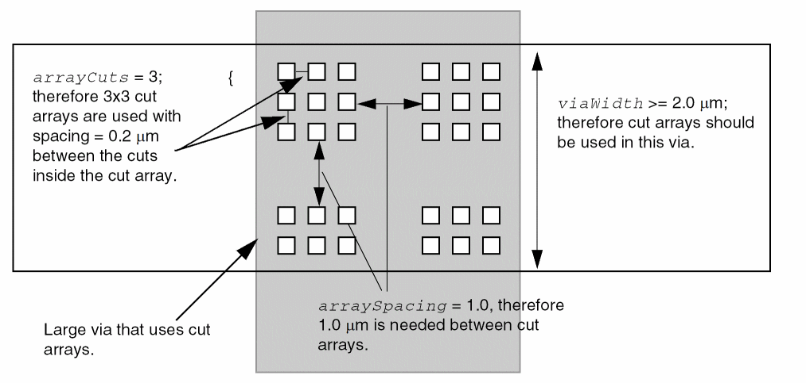 -
Array Spacing Rule Example 2
The following array spacing rule is the same as Example 1, except theLONGARRAYkeyword is present and theWIDTHkeyword is not specified, so it creates the via shown in Figure 2-2:ARRAYSPACING LONGARRAY CUTSPACING 0.2 ARRAYCUTS 3 SPACING 1.0 ;
An array of 2x2, 2x3, or 2xM cuts ignores this rule.
An array of 3x3 or 3xM must have 1.0 μm spacing from other cut arrays and 0.2 μm spacing between the cuts.
An array of 4x4 or 4xM is a violation because the array does not have 1.0 μm space from the 3xM sub-array inside the 4xM array.
Figure 2-2 Via Created With Array Spacing Long Array Rule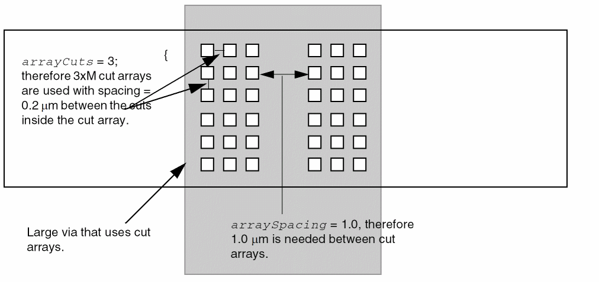 -
Array Spacing Rule Example 3
Assume the following multiple array spacing rules exist:ARRAYSPACING LONGARRAY CUTSPACING 0.2
ARRAYCUTS 3 SPACING 1.0
ARRAYCUTS 4 SPACING 1.5
ARRAYCUTS 5 SPACING 2.0 ;
The application can choose between 3xM cut arrays with 1.0 μm spacing, 4xM cut arrays with 1.5 μm spacing, or 5xM cut arrays with 2.0 μm spacing, using 0.2 cut-to-cut spacing inside each cut array. NoWIDTHvalue indicates that any via with more than three via cuts in both dimensions (that is, 3x3 and 3x4, but not 2x4) must follow these rules.
Specifies how much DC current a via cut of a certain area can handle in units of milliamps per square micron (mA/μm2). For an example using the DCCURRENTDENSITY syntax, see Example 5-3.
The DCCURRENTDENSITY syntax is defined as follows:
AVERAGE
{ value
| CUTAREA cutArea_1 cutArea_2 ... ; TABLEENTRIES value_1 value_2 ...
} ;
Specifies an enclosure rule for the cut layer.
The ENCLOSURE syntax is described as follows:
[ENCLOSURE[ABOVE | BELOW]overhang1overhang2[ WIDTHminWidth[EXCEPTEXTRACUTcutWithin]| LENGTHminLength];]
|
Indicates that any rectangle from this cut layer requires the routing layers to overhang by overhang1 on two opposite sides, and by overhang2 on the other two opposite sides. (See Figure 2-3.)
If you specify |
|
|
Indicates that the enclosure rule only applies when the width of the routing layer is greater than or equal to minWidth. If you do not specify a minimum width, the enclosure rule applies to all widths (as if minWidth equaled 0). If you specify multiple enclosure rules with the same width (or with no width), then there are several legal enclosure rules for this width, and the application only needs to meet one of the rules. If you specify multiple enclosure rules with different minWidth values, the largest minWidth rule that is still less than or equal to the wire width applies. For example, if you specify enclosure rules for 0.0 μm, 1.0 μm, and 2.0 μm widths, then a 0.5 μm wire must meet a 0.0 rule, a 1.5 μm wire must meet a 1.0 rule, and a 2.0 μm wire must meet a 2.0 rule. (See Example 2-2.) |
|
|
Indicates that if there is another via cut having same metal shapes on both metal layers less than or equal to cutWithin distance away, this |
|
|
Indicates that the enclosure rule only applies if the total length of the longest opposite-side overhangs is greater than or equal to minLength. The total length of the overhang is measured at the via cut center (see illustration F in Figure 2-5). |
|
-
The following definition describes a cut layer that has different enclosure rules for m1 below than for m2 above.
LAYER via12
TYPE CUT ;
WIDTH 0.20 ; #cuts .20 x .20 squares
ENCLOSURE BELOW .03 .01 ; #m1: 0.03 on two opposite sides, 0.01 on other
ENCLOSURE ABOVE .05 .01 ; #m2: 0.05 on two opposite sides, 0.01 on other
RESISTANCE 10.0 ; #10.0 ohms per cut
...
END via12
-
The following definition describes a cut layer that requires extra enclosure if the metal width is wider:
LAYER via23
TYPE CUT ;
WIDTH 0.20 ; #cuts .20 x .20 squares
SPACING 0.15 #via23 edge-to-edge spacing is 0.15
ENCLOSURE .05 .01 ; #m2, m3: 0.05 on two opposite sides, 0.01 on
#other sides
ENCLOSURE .02 .02 WIDTH 1.0 ; #m2 needs 0.02 on all sides if m2 width >=1.0
#m3 needs 0.02 on all sides if m3 width >=1.0
ENCLOSURE .05 .05 WIDTH 2.0 ; #m2 needs 0.05 on all sides if m2 width >=2.0
#m3 needs 0.05 on all sides if m3 width >=2.0
...
END via23
-
The following definition describes a cut layer that requires an overhang of .07 μm on all sides of metal3, and an overhang of .09 μm on all sides of metal4, if the widths of metal3 and metal4 are greater than or equal to 1.0 μm:
LAYER via34
TYPE CUT ;
WIDTH 0.25 ; #cuts .25 x .25 squares
ENCLOSURE .05 .01 ; #minimum width enclosure rule
ENCLOSURE BELOW .07 .07 WIDTH 1.0 ; #m3 needs .07 on all sides if m3 width >=1.0
ENCLOSURE ABOVE .09 .09 WIDTH 1.0 ; #m4 needs .09 on all sides if m4 width >=1.0
...
END via34
Example 2-3 Enclosure Rule With Width and ExceptExtraCut
The following definition describes a cut layer that requires an enclosure of either .05 μm on opposite sides and 0.0 μm on the other two sides, or 0.04 μm on opposites sides and 0.01 μm on the other two sides. It also requires an enclosure of 0.03 μm in all directions if the wire width is greater than or equal to 0.03 μm, unless there is an extra cut (redundant cut) within 0.2 μm.
LAYER via34
TYPE CUT ;
WIDTH 0.10 #cuts .10 x .10 squares
SPACING 0.10 ; #minimum edge-to-edge spacing is 0.10
ENCLOSURE 0.0 0.05 ; #overhang 0.0 0.05
ENCLOSURE 0.01 0.04 ; #or, overhang 0.01 0.04
#if width >= 0.3, need 0.03 0.03, unless extra cut across wire within 0.2μm
ENCLOSURE 0.03 0.03 WIDTH 0.3 EXCEPTEXTRACUT 0.2 ;
...
END via34
Figure 2-4 Illustrations of Enclosure Rule With Width and ExceptExtraCut
Example 2-4 Enclosure Rule With Length and Width
The following definition describes a cut layer that requires an enclosure of .05 μm on opposite sides and 0.0 μm on the other two sides, as long as the total length enclosure on any two opposite sides is greater than or equal to 0.7 μm. Otherwise, it requires 0.05 μm on all sides if the total enclosure length is less than or equal to 0.7 μm. It also requires 0.10 μm on all sides if the metal layer has a width that is greater than or equal to 1.0 μm. (Figure 2-5 illustrates examples of violations and acceptable vias for the three ENCLOSURE rules.)
LAYER via34
TYPE CUT ;
WIDTH 0.20 #cuts .20 x .20 squares
SPACING 0.20 ; #via34 edge-to-edge spacing is 0.20
ENCLOSURE 0.05 0.0 LENGTH 0.7 ; #overhang 0.05 0.0 if total overhang >= 0.7
ENCLOSURE 0.05 0.05 ; #or, overhang 0.05 on all sides
ENCLOSURE 0.10 0.10 WIDTH 1.0 ; #if width >= 1.0, always need 0.10
...
END via34
Figure 2-5 Illustrations of Enclosure Rule With Length and Width
Specifies the name for the layer. This name is used in later references to the layer.
Specifies how many masks for double- or triple-patterning will be used for this layer. The maskNum variable must be an integer greater than or equal to 2. Most applications support values of 2 or 3 only.
PREFERENCLOSURE [ABOVE | BELOW] overhang1 overhang2 [WIDTH minWidth]
Specifies preferred enclosure rules that can improve manufacturing yield, instead of enclosure rules that absolutely must be met (see the ENCLOSURE keyword). Applications should use the PREFERENCLOSURE rule when it has little or no impact on density and routability.
Specifies a numerical or string value for a layer property defined in the PROPERTYDEFINITIONS statement. The propName you specify must match the propName listed in the PROPERTYDEFINITIONS statement.
Specifies the resistance per cut on this layer. LEF vias without their own specific resistance value, or DEF vias from a VIARULE without a resistance per cut value, can use this resistance value.
Via resistance is computed using resistancePerCut and Kirchoff’s law for typical parallel resistance calculation. For example, if R =10 ohms per cut, and the via has one cut, then R =10 ohms. If the via has two cuts, then R = (1/2) * 10 = 5 ohms.
Specifies the minimum spacing allowed between via cuts on the same net or different nets. For via cuts on the same net, this value can be overridden by a spacing with the SAMENET keyword. (See Example 2-5.)
The SPACING syntax is defined as follows:
[SPACINGcutSpacing[CENTERTOCENTER][SAMENET][ LAYERsecondLayerName[STACK]| ADJACENTCUTS {2 | 3 | 4}WITHINcutWithin[EXCEPTSAMEPGNET]| PARALLELOVERLAP| AREAcutArea];] ...
|
Specifies the default minimum spacing between via cuts, in microns. |
|
|
Computes the cutSpacing or cutWithin distances from cut-center to cut-center, instead of from cut-edge to cut-edge (the default behavior). (See |
|
|
Indicates that the cutSpacing value only applies to same-net cuts. The |
|
|
Applies the spacing rule between objects on the cut layer and objects on 2ndLayerName. The second layer must be a cut or routing layer already defined in the LEF file, or the next routing layer declared in the LEF file. This allows “one layer look ahead,” which is needed in some technologies. (See |
|
|
Indicates that same-net cuts on two different layers can be stacked if they are aligned. If the cuts are not the same size, the smaller cut must be completely covered by the larger cut, to be considered legal. If both cuts are the same size, the centers of the cuts must be aligned, to be legal; otherwise, the cuts must have cutSpacing between them. If cutSpacing is 0.0, the same-net cut vias can be placed anywhere legally, including slightly overlap case. (See
Most applications only allow spacing checks and |
|
|
Applies the spacing rule only when the cut has two, three, or four via cuts that are less than cutWithin distance, in microns, from each other. You can specify only one |
|
|
Indicates that the |
|
|
Indicates that cuts on different metal shapes that have a parallel edge overlap greater than 0 require cutSpacing distance between them.
Only one |
|
|
Indicates that any cut with an area greater than or equal to cutArea requires edge-to-edge spacing greater than or equal to cutSpacing to all other cuts. (See
A
If you include |
|
Example 2-5 Spacing Rule Examples
-
Spacing Rule Example 1
The following spacing rule defines the cut spacing required between a cut and the routing immediately above the cut. The spacing only applies to “outside edges” of the routing shape, and does not apply to a routing shape already overlapping the cut shape.LAYER cut12
SPACING 0.10 ; #normal min cut-to-cut spacing
SPACING 0.15 LAYER metal2 ; #spacing from cut to routing edge above
...
END cut12
LAYER metal2
...
END metal2
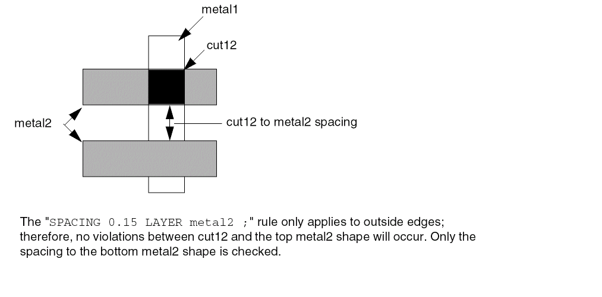 -
Spacing Rule Example 2
The following spacing rule specifies that extra space is needed for any via with more than three adjacent cuts, which happens if one via has more than 2x2 cuts (see Figure 2-6). A cut that is within .25 μm of three other cuts requires spacing that is greater than or equal to 0.22 μm.LAYER CUT12
SPACING 0.20 ; #default cut spacing
SPACING 0.22 ADJACENTCUTS 3 WITHIN 0.25 ;
...
END CUT12
Adjacent Via Cuts
A cut is considered adjacent if it is within distance of another cut in any direction (including a 45-degree angle). Figure 2-6 illustrates adjacent via cuts for 2x2, 2x3, and 3x3 vias, for typical spacing values (that is, the diagonal spacing is greater than theADJACENTCUTSdistance value). For three adjacent cuts, theADJACENTCUTSrule allows tight cut spacing on 1xn vias and 2x2 vias, but requires larger cut spacing on 2x3, 2x4 and 3xn vias. For four adjacent cuts, the rule allows tight cut spacing on 2xn vias, but it requires larger cut spacing on 3xn vias.
TheADJACENTCUTSrule overrides the cut-to-cut spacing used inVIARULEGENERATEstatements for large vias if theADJACENTCUTSspacing value is larger than theVIARULEspacing value.
Figure 2-6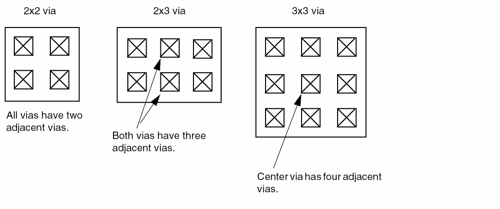 -
Spacing Rule Example 3
The following spacing rule specifies that extra space is required for any via with 3x3 cuts or more (that is, a cut with four or more adjacent cuts – see Figure 2-6). A cut that is within .25 μm of four other cuts requires spacing that is greater than or equal to 0.22 μm.LAYER CUT12
SPACING 0.20 ; #default cut spacing
SPACING 0.22 ADJACENTCUTS 4 WITHIN 0.25 ;
...
END CUT12
-
Spacing Rule Example 4
The following spacing rule indicates that center-to-center spacing of greater than or equal to 0.30 μm is required if the center-to-center spacing to three or more cuts is less than 0.30 μm. This is equivalent to saying a cut can have only two other cuts with center-to-center spacing that is less than 0.30 μm.SPACING 0.30 CENTERTOCENTER ADJACENTCUTS 3 WITHIN 0.30 ;
-
Spacing Rule Example 5
Figure 2-7 illustrates the following spacing rule:SPACING 1.0 ;
SPACING 1.2 ADJACENTCUTS 2 WITHIN 1.5 EXCEPTSAMEPGNET ;
Figure 2-7 Except Same PG Net Rule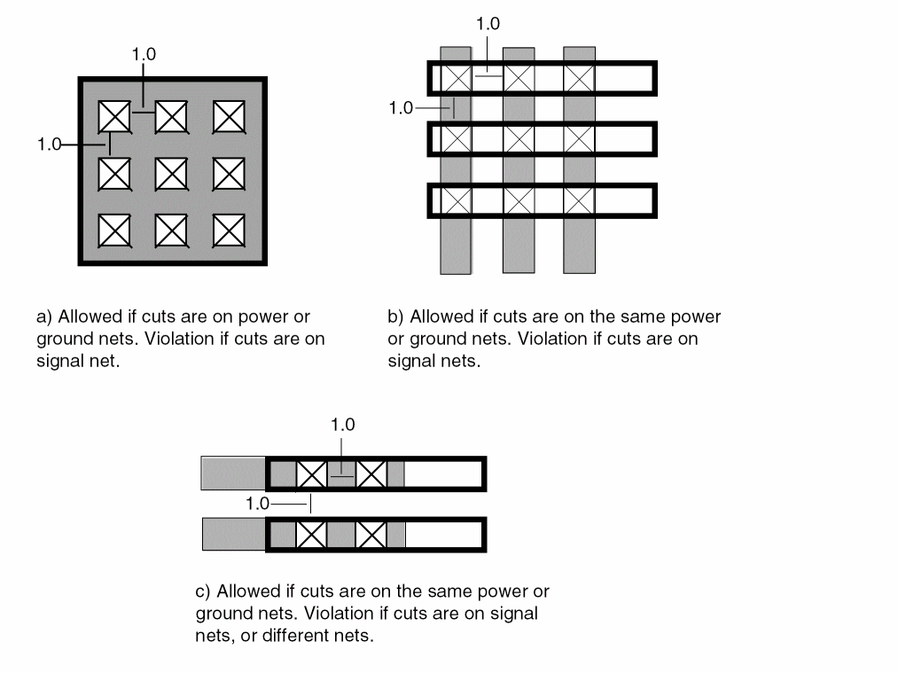 -
Spacing Rule Example 6
The following spacing rule indicates that normal cuts require 0.10 μm edge-to-edge spacing, and cuts with an area greater than or equal to 0.02 μm2 require 0.12 μm edge-to-edge spacing to all other cuts:SPACING 1.0 ;
SPACING 0.12 AREA 0.02 ;
-
Spacing Rule Example 7
The following spacing rule indicates cut23 cuts must be 0.20 μm from cut12 cuts unless they are exactly aligned:LAYER cut23 ;
SPACING 0.20 SAMENET LAYER cut12 STACK ;
-
Spacing Rule Example 8
Figure 2-8 illustrates the following spacing rule:SPACING 1.0 ;
SPACING 1.5 PARALLELOVERLAP ;
Figure 2-8 Parallel Overlap Rule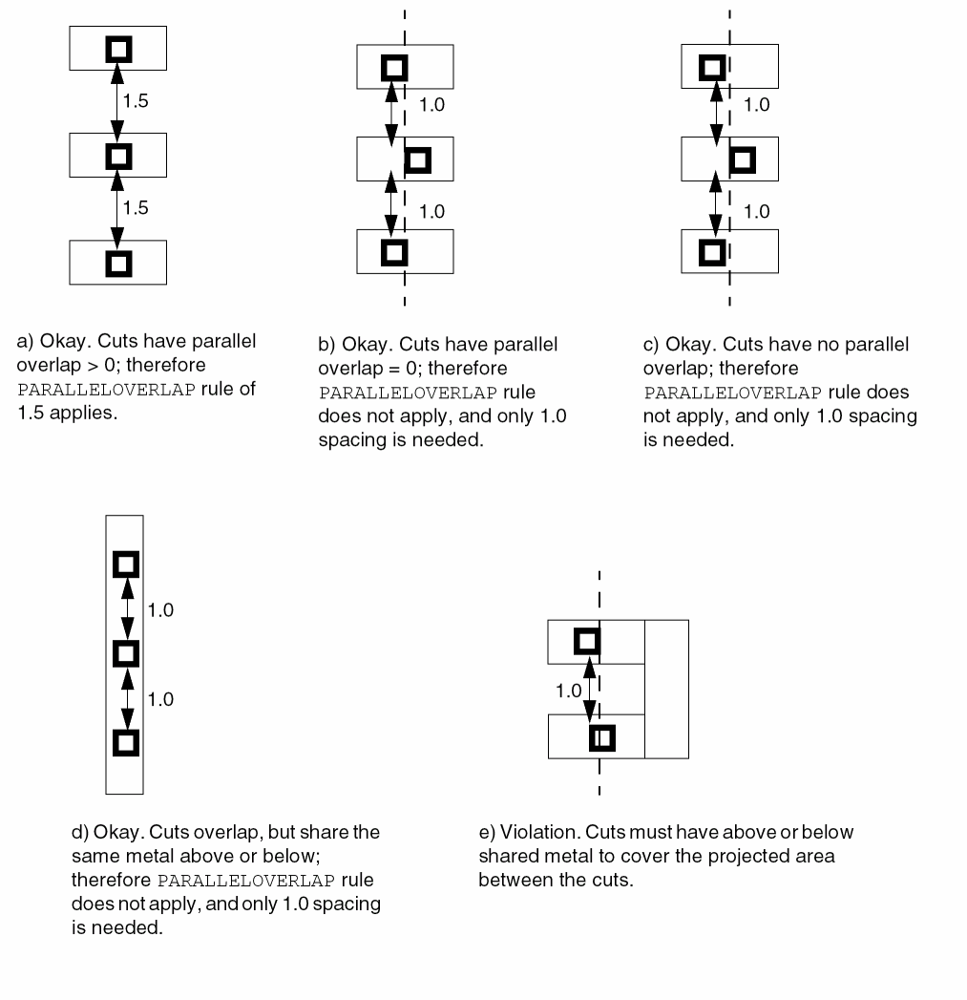
Specifies spacing tables to use on the cut layer.
The SPACINGTABLE syntax is defined as follows:
SPACINGTABLE ORTHOGONAL
{WITHIN cutWithin SPACING orthoSpacing}...
;]
|
Indicates that if two cuts have parallel overlap that is greater than |
|
Example 2-6 Spacing Table Orthogonal Rule
The following example shows how a spacing table orthogonal rule is defined:
SPACING 0.10 #min spacing for all cuts
SPACINGTABLE ORTHOGONAL
WITHIN 0.15 SPACING 0.11
WITHIN 0.13 SPACING 0.13
WITHIN 0.11 SPACING 0.15 ;
Figure 2-9 Spacing Table Orthogonal Overlap Regions
Specifies that the layer is for contact-cuts. The layer is later referenced in vias, and in rules for generating vias.
Specifies the minimum width of a cut. In most technologies, this is also the only legal size of a cut.
Type: Float, specified in microns
Defining Cut Layer Properties to Create 32/28 nm and Smaller Nodes Rules
You can include cut layer properties in your LEF file to create 32/28 nm and smaller nodes rules that currently are not supported by existing LEF syntax. The properties are specified inside the LAYER CUT statements where they can be seen with other rules.
Before you can reference them, properties must be defined at the beginning of the LEF file in the PROPERTYDEFINITIONS statement, immediately before the first LAYER statement.
-
Properties belong to the
LAYERobject and have a type ofSTRING. -
The property names used for these rules all start with
LEF58_.
All properties use the following syntax within the LEF PROPERTYDEFINITIONS statement:
PROPERTYDEFINITIONS LAYERpropNameSTRING ["stringValue"] ;
END PROPERTYDEFINITIONS
The property definitions for the cut layer properties are as follows:
PROPERTYDEFINITIONS
LAYER LEF58_TYPE STRING ;
LAYER LEF58_ADJACENTFOURCUTS STRING ;
LAYER LEF58_ANTENNADIFFGATEPWL STRING ;
LAYER LEF58_ANTENNAGATEPWL
LAYER LEF58_ANTENNAGATEPLUSDIFF
LAYER LEF58_ARRAYSPACING STRING ;
LAYER LEF58_BACKSIDE STRING ;
LAYER LEF58_CUTCLASS STRING ;
LAYER LEF58_CUTONCENTERLINE STRING ;
LAYER LEF58_DIRECTIONALSPACING STRING ;
LAYER LEF58_ENCLOSURE STRING ;
LAYER LEF58_ENCLOSUREEDGE STRING ;
LAYER LEF58_ENCLOSURETABLE STRING ;
LAYER LEF58_ENCLOSURETOJOINT STRING ;
LAYER LEF58_ENCLOSUREWIDTH STRING ;
LAYER LEF58_EOLENCLOSURE STRING ;
LAYER LEF58_EOLSPACING STRING ;
LAYER LEF58_FORBIDDENSPACING STRING ;
LAYER LEF58_KEEPOUTZONE STRING ;
LAYER LEF58_MANUFACTURINGGRID STRING ;
LAYER LEF58_MAXSPACING STRING ;
LAYER LEF58_MINENCLOSURE STRING ;
LAYER LEF58_NOCUTCLASS STRING ;
LAYER LEF58_NOMETALSPACING STRING ;
LAYER LEF58_ONEDARRAY STRING ;
LAYER LEF58_REGION STRING ;
LAYER LEF58_SAMEMETALALIGNEDCUTS STRING ;
LAYER LEF58_SPACING STRING ;
LAYER LEF58_SPACINGTABLE STRING ;
LAYER LEF58_VIACLUSTER STRING ;
LAYER LEF58_VIAGROUP STRING ;
LAYER LEF58_VIAGROUPSPACING STRING ;
LAYER LEF58_VOLTAGESPACING STRING ;
END PROPERTYDEFINITIONS
Type Rule
A type rule can be used to further classify a cut layer.
You can create a type rule by using the following property definition:
TYPE CUT; PROPERTY LEF58_TYPE "TYPE [TSV [LAYERbottomLayer topLayer]| PASSIVATION | MIMCAP | HIGHR | SPECIALCUT LAYERbottomLayer topLayer] ;" ;
Adjacent Four Cuts Rule
An adjacent four cuts rule can be used to describe a cut spacing rule for two sets of two cuts with PRL greater than zero when few other conditions are met.
You can create an adjacent four cuts rule by using the following property definition:
PROPERTY LEF58_ADJACENTFOURCUTS"ADJACENTFOURCUTScutSpacingCUTCLASS {className| ALL} {ABOVE | BELOW} PARALLELparLengthWITHINparWithin[MERGEDCUTS] [HORIZONTAL|VERTICAL] [EXCEPTDIFFMETAL] [MINCORNER | MININNERCORNER | MAXINNERCORNER] [EXCEPTMAXPRLmaxPrl] [EXCEPTMINLENGTHminLength] [WITHINCUTwithin] [EXCEPTOTHERWIDTHWITHCUTwidth] ;" ;
Adjacent Four Cuts Rule Examples
Figure 2-10 Illustration of Adjacent Four Cuts Rule
Figure 2-11 Illustration of Adjacent Four Cuts Rule with EXCEPTDIFFMETAL
Figure 2-12 Illustration of Adjacent Four Cuts Rule with MERGEDCUTS
Figure 2-13 Illustration of Adjacent Four Cuts Rule with MINCORNER
Figure 2-14 Illustration of Adjacent Four Cuts Rule with MININNERCORNER
Figure 2-15 Illustration of Adjacent Four Cuts Rule with MAXINNERCORNER
Figure 2-16 Illustration of Adjacent Four Cuts Rule with EXCEPTMAXPRL
Figure 2-17 Illustration of Adjacent Four Cuts Rule with EXCEPTMINLENGTH
Figure 2-18 Illustration of Adjacent Four Cuts Rule with WITHINCUT
Figure 2-19 Illustration of Adjacent Four Cuts Rule with EXCEPTOTHERWIDTHWITHCUT
Antenna Diff Gate PWL Rule
The antenna diff gate PWL rule is used to specify that the antenna gate connected to the diffusion diode can be used to define a piece-wise linear (PWL) table on the given antenna model that is indexed by the real gate area, and returns an “effective gate area” interpolated from the table.
You can create an antenna diff gate PWL rule by using the following property definition:
PROPERTY LEF58_ANTENNADIFFGATEPWL
"ANTENNADIFFGATEPWL {OXIDE1 | OXIDE2 | OXIDE3 | OXIDE4 | OXIDE5 | ...
| OXIDE32}
((gateArea1 effectiveGateArea1) (gateArea2 effectiveGateArea2) ... ) ;" ;
Note that if ANTENNADIFFGATEPWL is defined, the ANTENNAGATEPWL rule is applied only to the antenna gate that is not connected to the diffusion diode. If ANTENNADIFFGATEPWL is not defined, the ANTENNAGATEPWL rule is applied to all the antenna gates.
Antenna Gate PWL Rule
The antenna gate PWL rule can be used to define a PWL (piece-wise linear) table on the given antenna model that is indexed by the real gate area, and returns an “effective gate area” interpolated from the table.
You can create an antenna gate PWL rule by using the following property definition:
PROPERTY LEF58_ANTENNAGATEPWL
"ANTENNAGATEPWL {OXIDE1 | OXIDE2 | OXIDE3 | OXIDE4 | OXIDE5 | ...
| OXIDE32}
((gateArea1 effectiveGateArea1) (gateArea2 effectiveGateArea2) ... ) ;" ;
Antenna Gate Plus Diffusion Rule
The antenna gate plus diffusion rule can be used to represent the protection provided by the diffusion area that is added to the gate area value in the PAR (partial antenna ratio) equation on the given antenna model, as given below, which can be considered as the “additional effective gate-area”.
PAR = {(cutFactor * cut) * diffReducePWL(diff) - (minusDiffFactor * diff)} / {gatePWL(gate) + plusDiffProtect(diff)}
You can create an antenna gate plus diffusion rule by using the following property definition:
PROPERTY LEF58_ANTENNAGATEPLUSDIFF
"ANTENNAGATEPLUSDIFF {OXIDE1 | OXIDE2 | OXIDE3 | OXIDE4 |OXIDE5 | ...
| OXIDE32}
{plusDiffFactor |
PWL ((diffArea1 plusDiffProtect1) (diffArea1 plusDiffProtect2) ...)} ;" ;
All the other keywords are the same as the existing LEF cut layer ANTENNAGATEPLUSDIFF syntax.
Antenna Gate Plus Diffusion Rule Examples
The following example shows a rule for layer via1:
cut_area <= 100 * (funcGate(gate_area) + funcDiff(diff_area))
funcGate = 1 for gate_area < 1, and equals 2 for gate_area >= 1
funcDiff = 10 for diff_area < 2, and equals 50 for diff_area >= 2.
100 >= cut_area / (funcGate(gate) + funcDiff(diff))
This fits the PAR formula above using gatePWL(gate) and plusDiffProtect(diff) values.
Then the LEF file will have the following:
#Max-ratio = 100 for all diff-area values because the diff-protect value is #accounted for inside the PAR equation. Note, there is no need for ANTENNAAREARATIO #which is only checked for cut with no diff connected, while ANTENNADIFFAREARATIO
#is checked for diff and no diff connected.
ANTENNAMODEL OXIDE1 ;
ANTENNADIFFAREARATIO ( 0 100 ) ( 10000.0 100 ) ;
#This models funcGate(gate_area) above: 0 to 0.99 is 1, above 1.0 is 2
PROPERTY LEF58_ANTENNAGATEPWL OXIDE1
"ANTENNAGATEPWL ( ( 0 1 ) ( 0.99 1 ) ( 1.0 2 ) ( 10000.0 2 ) ) ;" ;
#This models funcDiff(diff_area) above: 0 to 1.99 is 10, above 1.0 is 50
PROPERTY LEF58_ ANTENNAGATEPLUSDIFF
"ANTENNAGATEPLUSDIFF OXIDE1
(( 0 10 ) ( 1.99 10 ) ( 2.0 50 ) ( 10000.0 50 )) ;" ;
Array Spacing Rule
You can use array spacing rules to require extra space between cut arrays, and between each cut array inside one large via. This rule only applies to large vias with many cuts; it does not apply to cuts for smaller vias.
When a cut layer has multiple cut classes defined, at the most one ARRAYSPACING property statement can be specified per cut class.
You can create an array spacing rule by using the following property definition:
PROPERTY LEF58_ARRAYSPACING “ARRAYSPACING [CUTCLASSclassName] [PARALLELOVERLAP] [LONGARRAY] [WIDTHviaWidth] [WITHIN within ARRAYWIDTH arrayWidth] CUTSPACINGcutSpacing{ARRAYCUTSarrayCutsSPACINGarraySpacing} ... ;...” ;
All other keywords are the same as the existing LEF cut layer ARRAYSPACING syntax.
Defines the array spacing rule for a specific cut class (className). If CUTCLASS is defined in cut layer, then CUTCLASS must be specified in the ARRAYSPACING statement. Specify individual rules with the CUTCLASS keyword for each cut class, if needed.
Indicates that the array spacing rule applies only when there is a parallel edge overlap greater than 0.
WITHIN within ARRAYWIDTH arrayWidth
Indicates a specific way to check cut spacing of a via array. With WITHIN, only one ARRAYCUTS statement should be defined, and cutSpacing and arraySpacing should have the same value. Any same-net or different-net cuts within within would be considered as a via array. Then, a rectilinear bounding box of all of the cuts of the via array is formed. Any cuts completely inside a portion that has width less than or equal to arrayWidth is removed. The remaining cuts must have spacing of cutSpacing (or arraySpacing).
Type: Float, specified in microns
Array Spacing Rule Examples
-
The following array spacing rule indicates that any
AY_arrayvia with a metal width greater than or equal to1.0μm should use cut spacing of0.10μm between cuts inside 3x3 cut arrays. The cut arrays should be at a distance greater than0.30μm from other cut arrays with a parallel edge overlap greater than0.PROPERTY LEF58_ARRAYSPACING
"ARRAYSPACING CUTCLASS AY_array PARALLELOVERLAP WIDTH 1.0 CUTSPACING 0.10 ARRAYCUTS 3 SPACING 0.30 ;" ;
-
The next example illustrates the following array spacing rule:
PROPERTY LEF58_ARRAYSPACING “ ARRAYSPACING WITHIN 0.2 ARRAYWIDTH 0.06 CUTSPACING 0.05 ARRAYCUTS 3 SPACING 0.05 ; “ ;
Figure 2-20 Illustration of Array Spacing Rule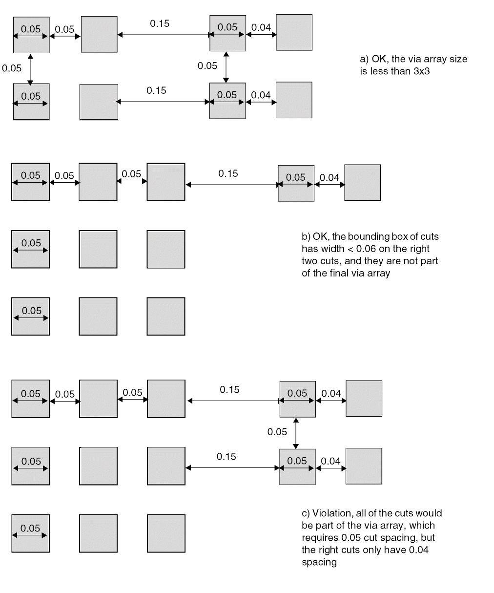
Backside Rule
A backside rule can be used to specify that cut layer is used on the underside of the die.
You can create a backside rule by using the following property definition:
PROPERTY LEF58_BACKSIDE “BACKSIDE ;” ;
Indicates that the cut layer is a backside cut layer. Only a regular cut layer or a passivation cut layer can be a backside layer; a TSV cut layer cannot be a backside layer.
Cut Class Rule
Cut class rules can be used to define the cut classes to which different types of vias can belong.
You can create a cut class rule by using the following property definition:
PROPERTY LEF58_CUTCLASS "CUTCLASSclassNameWIDTHviaWidth[LENGTHviaLength] [CUTSnumCut] [ORIENT {HORIZONTAL | VERTICAL}] ; " ;
Specifies the name of the cut class. This name is used in later references to the cut class.
Defines the equivalent number of cuts of the cut class for calculation of resistance value. Resistance value for this cut class vias would be (
Resistance of the cut layer
)/
numCut
.
Default: 1
Type: Integer
Figure 2-21 illustrates three via sizes. Via Vx1 contains one cut, via Vx2 contains 2 cuts, and via Vx4 contains four cuts. Using the above equation, Figure 2-21 shows how many cuts of each cut type are required to meet the listed minimum cut rule.
The resistance value is determined using the following equation:
Figure 2-21 Illustration of Via Sizes
Specifies the cut length for this cut class. Any vias with cut lengths of viaLength belong to this class. LENGTH is only used for rectangular rather than square cuts, and viaLength must be greater than viaWidth.
Type: Float, specified in microns
ORIENT {HORIZONTAL | VERTICAL}
Specifies that the given horizontal or vertical direction is the only legal orientation of a cut via in this cut class. This keyword should be specified only for a rectangular cut class.
Specifies the cut width for this cut class. Any vias with cut widths of viaWidth belong to this class.
Type: Float, specified in microns
Cut Class Rule Examples
-
The following cut class rule indicates that any cut vias with a square dimension of
0.15μm belong to cut classVA:PROPERTY LEF58_CUTCLASS "CUTCLASS VA WIDTH 0.15 ;" ;
-
The following cut class rule indicates that any cut vias with a rectangular dimension of
0.15μm and0.35μm belong to cut classVB. This cut class uses2cuts; therefore, for a minimum cut rule requirement of two cuts, one via of this cut class is required to meet the rule. If the resistance value of a cut layer is 10 ohms, the resistance value of vias of this cut class is1/2 x 10 = 5 ohms.PROPERTY LEF58_CUTCLASS "CUTCLASS VB WIDTH 0.15 LENGTH 0.35 CUTS 2 ;" ;
-
The following cut class rule indicates that any cut vias with a square dimension of
0.20μm belong to cut classVC. This cut class uses4cuts; therefore, for a minimum cut rule requirement of4cuts, one via of this cut class is required to meet the rule.PROPERTY LEF58_CUTCLASS "CUTCLASS VC WIDTH 0.20 CUTS 4 ;" ;
Cut On Center Line Rule
You can create a cut on center line rule to specify that the center of a via cut must be placed on the center lines of the wires on both metal layers if the wire width is less than the specified width.
You can create a cut on center line rule by using the following property definition:
PROPERTY LEF58_CUTONCENTERLINE "CUTONCENTERLINEwidthCUTCLASSclassName[ABOVE | BELOW] [EXTRACUTcutWithinWIDTHexactWidth] ;..." ;
Cut On Center Line Rule Examples
-
The following cut on center line rule indicates that the center of a
VAvia cut must be on the centerlines of the wires on both metal layers with width less than 0.13 µm:PROPERTY LEF58_CUTONCENTERLINE
"CUTONCENTERLINE 0.13 CUTCLASS VA ;" ;
Figure 2-22 Illustration of the Cut on Center Line Rule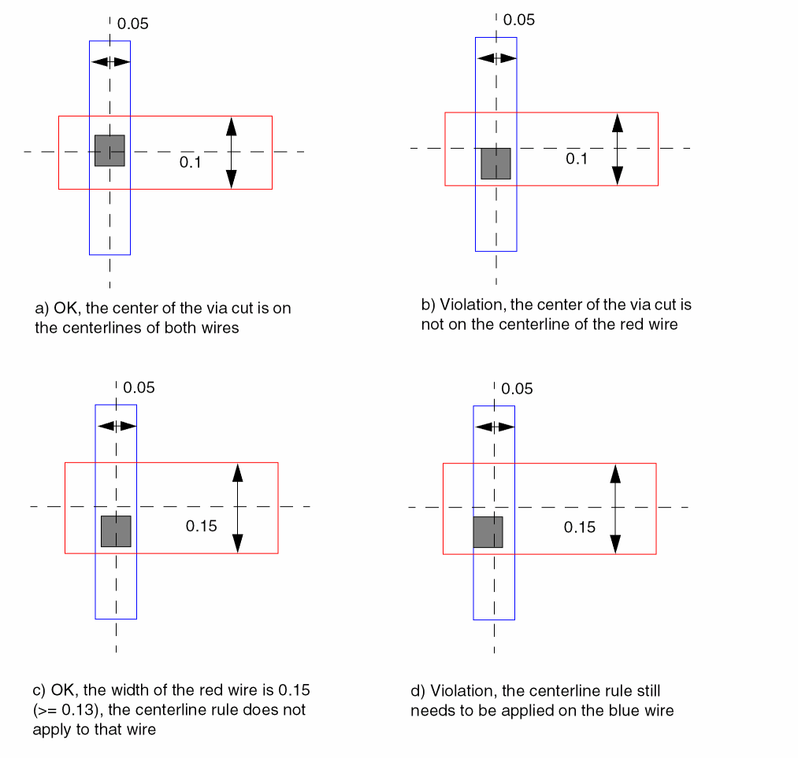
Directional Spacing Rule
You can create a directional spacing rule by using the following property definition:
PROPERTY LEF58_DIRECTIONALSPACING "DIRECTIONALSPACINGcutSpacing{HORIZONTAL | VERTICAL} PRLprlCUTCLASSclassName1TOclassName2[PARALLELparLengthWITHINparWithin[EXCLUDECUTEDGE] [CUTSnumCuts] [VIAGROUPgroupName]] ; " ;
Directional Spacing Rule Examples
-
The following diagram illustrates the directional spacing rules given below:
PROPERTY LEF58_VIAGROUP “
VIAGROUP VGA CUTS 3 CUTCLASS VA
PRLTWOSIDES -0.01 -0.03 -0.01 -0.03 WITHIN 0.02 0.04 ; “ ;
PROPERTY LEF58_DIRECTIONALSPACING “
DIRECTIONALSPACING 0.07 VERTICAL PRL -0.02
CUTCLASS VB TO VA PARALLEL -0.04 WITHIN 0.05 ;
DIRECTIONALSPACING 0.08 VERTICAL PRL -0.02
CUTCLASS VB TO VA
PARALLEL -0.04 WITHIN 0.05 VIAGROUP VGA ; “ ;
Figure 2-23 Illustration of the Directional Spacing Rule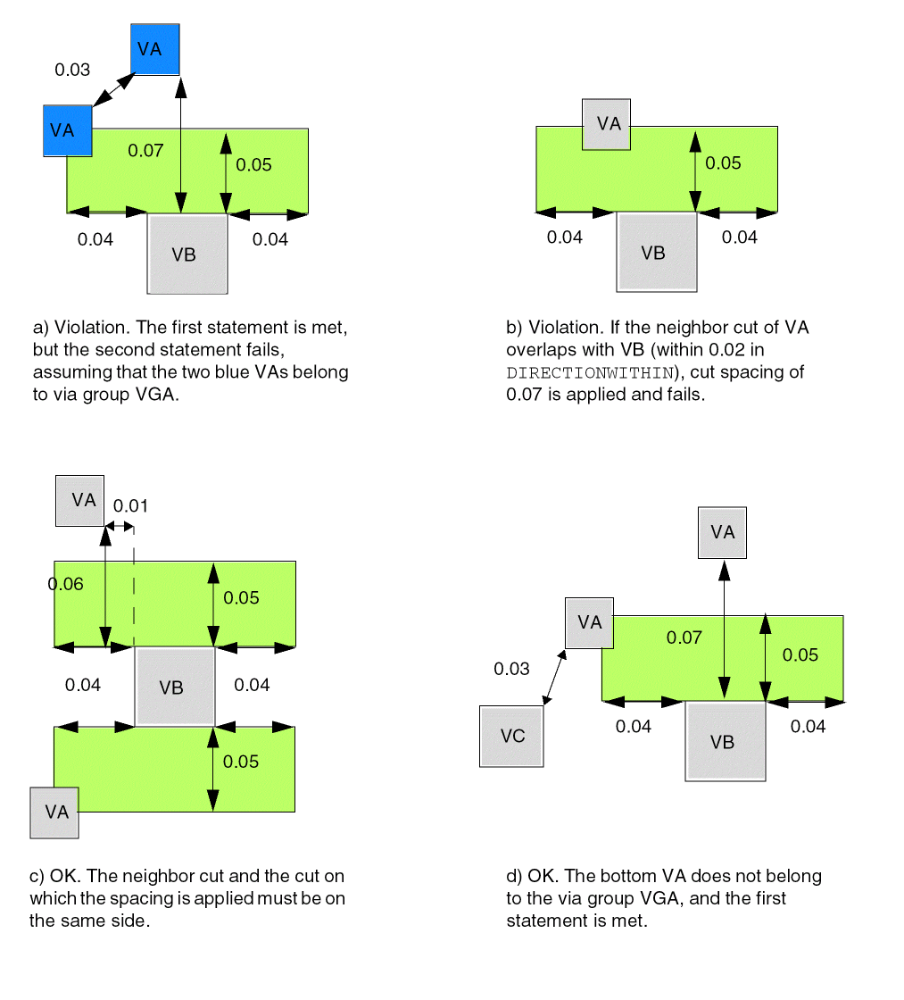 -
The following diagram illustrates the directional spacing rule with
EXCLUDECUTEDGEgiven below:PROPERTY LEF58_DIRECTIONALSPACING "
DIRECTIONALSPACING 0.15 VERTICAL PRL 0
CUTCLASS VB TO VA PARALLEL -0.08 WITHIN 0.01 ;
EXCLUDECUTEDGE CUTS 2 ; " ;
Figure 2-24 Illustration of the Directional Spacing Rule with EXCLUDECUTEDGE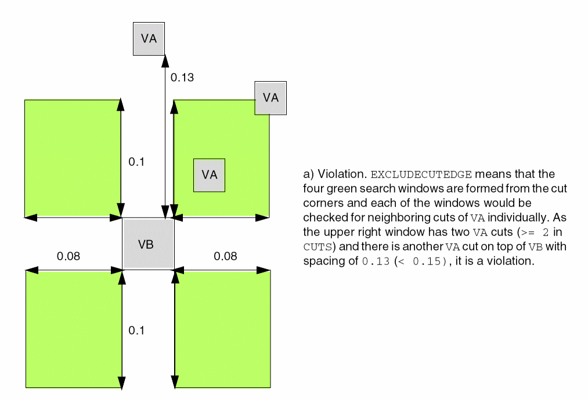
Enclosure Rule
An enclosure rule can be used to prohibit via cuts from sharing the same wire edge.
You can create an enclosure rule by using the following property definition:
PROPERTY LEF58_ENCLOSURE "ENCLOSURE [CUTCLASSclassName][ABOVE | BELOW] [MINCORNER] {EOLeolWidth[HORIZONTAL | VERTICAL] [MINLENGTHminLength] [EOLONLY] [SHORTEDGEONEOL]eolOverhangotherOverhang[SIDESPACINGspacingEXTENSIONbackwardExtforwardExt|ENDSPACINGspacingEXTENSIONextension] |{overhang1overhang2|[OFFCENTERLINE] ENDoverhang1SIDEoverhang2| HORIZONTALoverhang1VERTICALoverhang2} [JOGLENGTHONLYlength[INCLUDELSHAPE] ] [HOLLOW {HORIZONTAL|VERTICAL}length] [WIDTHminWidth[INCLUDEABUTTED] [EXCEPTEXTRACUTcutWithin[PRL | NOSHAREDEDGE | EXACTPRLprl]] |LENGTHminLength|EXTRACUT [EXTRAONLY [PRLprl]] |REDUNDANTCUTcutWithin|PARALLELparLength[parLength2] WITHINparWithin[parWithin2] [BELOWENCLOSUREbelowEnclosure[ALLSIDESenclosure1enclosure2] |ABOVEENCLOSUREaboveEnclosure] |CONCAVECORNERSnumCorner|OTHERWITHINWIDTHwidthWITHINwithin[OTHERSIDEotherEnclosure]] } ;..." ;
All other keywords are the same as the existing LEF cut layer ENCLOSURE syntax.
|
Specifies that the enclosure rule applies only if the enclosure on the above metal layer is less than aboveEnclosure on the entire wire width or the edge containing the cut on either side perpendicular to the side having neighbors, or the wire direction containing the cut on the below metal layer. This means that |
|
|
Specifies that the rule is exempted if the below metal enclosure is greater than or equal to the minimum of the specified values, enclosure1 and enclosure2, on all four sides including corners and greater than or equal to the maximum of enclosure1 and enclosure2 on any two opposite sides of the cut.
This exemption works independently from belowEnclosure. In other words, if the conditions on |
|
|
Specifies that the enclosure rule only applies if the enclosure on the below metal layer is less than belowEnclosure on the entire wire width or the edge containing the cut on either side perpendicular to the side having neighbors, or the wire direction containing the cut on the above metal layer. This means that the |
|
|
Specifies a search window by extending overhang1 on four sides of the cut, overhang1 must be equal to overhang2. If the search window finds the number of concave corners of the metal enclosing the cut to be greater than the numCorner, then it is a violation. If the metal corner collides with a corner of the search window, then it does not count. If the metal corner aligns with a side edge of the search window, then it will count. |
|
|
Defines the enclosure rule for a specific cut class (className). If
Specify individual rules with the |
|
|
Specifies that for rectangular cut vias, overhang1 applies to the end edges, and overhang2 applies to the side edges. You must use this syntax only with cut class having rectangular cut vias. |
|
|
Specifies the enclosure rule only applies if there is no different-net neighbors on the EOL edge with spacing away and extension of extension. |
|
|
|
|
|
Specifies the enclosure values for a cut near an end-of-line edge with length less than eolWidth. The first overhang, eolOverhang, must be applied to the EOL edge and it's opposite side while the second overhang, otherOverhang, must be applied to the other two sides. If
|
|
|
|
|
|
Indicates that if there is another via cut having same metal shapes on both metal layers less than or equal to cutWithin distance away, then the
If the
If the
If you have more than one |
|
|
Indicates that the enclosure rule only applies when there are two or more cuts having same metal shapes on both metal layers. If you have multiple |
|
|
Specifies that vias with two or more cuts having the same metal shapes on both metal layers must follow this given enclosure statement, but not other |
|
|
Specifies that part of a via does not require any metal/enclosure. Take the center point of a cut and extend length horizontally or vertically, based on whether |
|
|
Specifies that the rule applies only if the |
|
|
Specifies that overhang1 must be applied on the left/right opposite sides horizontally, and overhang2 must be applied to bottom/top opposite sides vertically. |
|
|
Specifies that if a cut is abutted to the wide wire with width greater than or equal to minWidth, the corresponding overhang values will still be applied on the cut. |
|
|
Specifies that the enclosure rule applies only if a cut overlaps with a wrong way jog with minimum wrong way width and maximum edge length less than length sandwiched by two right way wires with projected |
|
|
Specifies that the enclosure in the corners only requires to cover the minimum enclosure value instead of MAXXY style of the two enclosure values. |
|
|
Specifies that the enclosure rule applies only for a via cut not colliding with the center line of the metal wires with width exactly equal to width. This keyword must be used along with |
|
|
Specifies the enclosure on the opposite side of a cut edge, which faces the wire fulfilling the |
|
|
Specifies that the enclosure rule applies only if there is a neighboring wire within within of the cut in the non-preferred routing layer direction having a width greater than width on the other layer on which the enclosure applies and that has the |
|
|
|
|
|
Specifies that the enclosure values must be fulfilled, but not other
If a second set of length and within variables, parLength2 and parWithin2, is specified, then they must be defined together. Here parLength2 must be smaller than parLength and parWithin2 must be larger than parWithin. Then, it will also be a violation if there is a neighbor that is greater than or equal to parWithin and less than parWithin2 having a common parallel run length to the cut less than parLength and greater than or equal to parLength2 on any one (or both) side(s). In other words, it is only legal if there are neighbors on both the sides based on parWithin and parLength, or there is no neighbor on either side based on parWithin2 and parLength2. |
|
|
Specifies that the enclosure rule must be applied for vias with two or more cuts if the cuts have parallel run length exactly equal to prl. |
|
|
Specifies the enclosure on redundant cuts, which share the same metal shapes on both metal layers to a cut within cutWithin distance that fulfills a
If a separate |
|
|
Specifies the enclosure rule only applies if there is no different-net neighbors on the side (non-EOL) edges with spacing away and extensions from the EOL edge by backwardExt going backward and forwardExt going forward. |
|
|
Specifies that the eolOverhang value must be applied to the end/short edges of a rectangular cut via while the otherOverhang value must be applied to the other opposite sides. This keyword must be used along with |
|
Enclosure Rule Examples
-
The following enclosure rule specifies that
VCvias should have0.10μm overhang on all four sides of the routing layers:PROPERTY LEF58_ENCLOSURE“ENCLOSURE CUTCLASS VC 0.10 0.10 ;” ; -
The following enclosure rule specifies that the end/short edge must have 0.05 μm overhang to a EOL edge:
PROPERTY LEF58_ENCLOSURE“ENCLOSURE CUTCLASS VB EOL 0.2SHORTEDGEONEOL 0.05 0.04 ;” ;
Figure 2-25 Illustration of Enclosure Rule With SHORTEDGEONEOL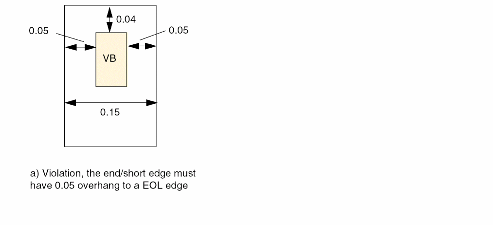 -
The following enclosure rule illustrates
JOGLENGTHONLY:ENCLOSURE 0.00 0.04 ;PROPERTY LEF58_ENCLOSURE “ENCLOSURE 0 0.03 JOGLENGTHONLY 0.1 ; “ ;
Figure 2-26 Illustration of the Enclosure Rule with JOGLENGTHONLY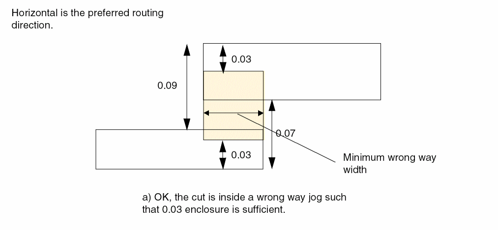 -
The following enclosure rule illustrates
INCLUDEABUTTED:ENCLOSURE 0.00 0.04 ;PROPERTY LEF58_ENCLOSURE"ENCLOSURE 0.05 0.05WIDTH 0.2 INCLUDEABUTTED ; " ;
Figure 2-27 Illustration of the Enclosure Rule with INCLUDEABUTTED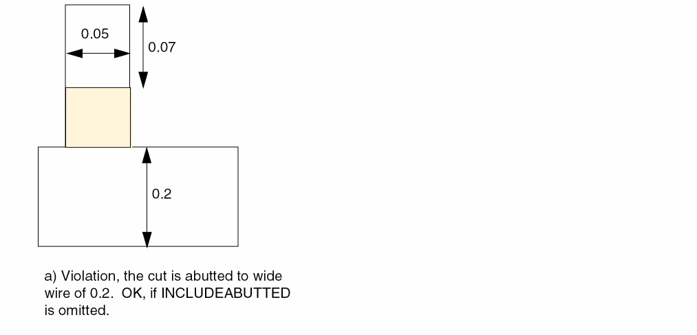 -
Figure 2-28 illustrates the following enclosure rules:
ENCLOSURE 0.0 0.05 ; #overhang 0.0 0.05ENCLOSURE 0.02 0.02 ; #or, overhang 0.02 0.02PROPERTY LEF58_ENCLOSURE“ENCLOSURE 0.03 0.03 WIDTH 0.3 EXCEPTEXTRACUT 0.2 PRL ;” ;
Figure 2-28 Illustrations of the Enclosure Rule With PRL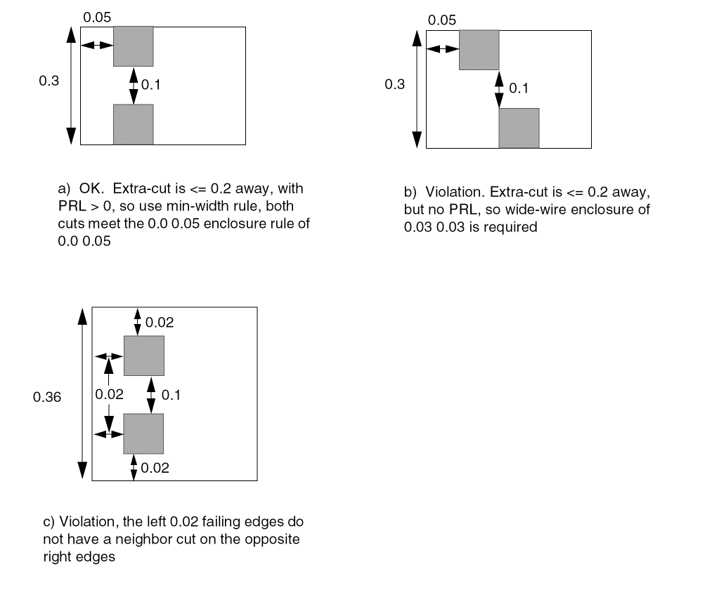 -
Figure 2-29 illustrates the following enclosure rules:
ENCLOSURE 0.0 0.05 ; #overhang 0.0 0.05ENCLOSURE 0.01 0.04 ; #or overhang 0.01 0.04PROPERTY LEF58_ENCLOSURE“ENCLOSURE 0.03 0.03 WIDTH 0.3 EXCEPTEXTRACUT 0.2 ;” ;
Figure 2-29 Illustration of the Enclosure Rule With ExceptExtraCut and NoSharedEdge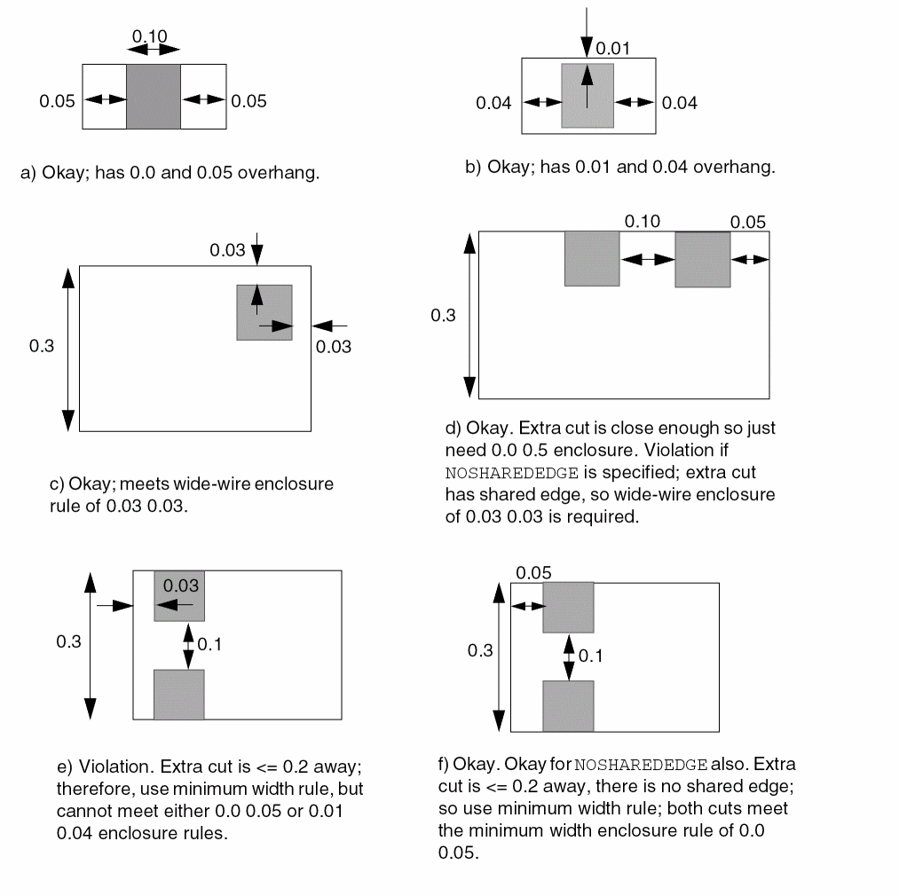 -
The following enclosure rule specifies that
VBrectangular cut vias should have0.10μm overhang on the end edges, and no overhang on the side edges on the routing layers. (See Figure 2-30 .)PROPERTY LEF58_ENCLOSURE“ENCLOSURE CUTCLASS VB END 0.10 SIDE 0.000 ;” ;
Figure 2-30 Illustration of the Enclosure Rule With CutClass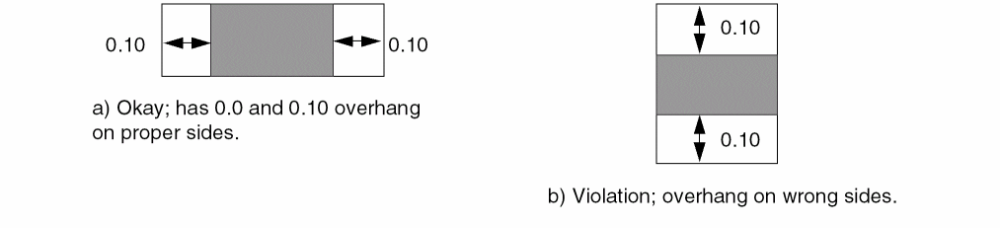 -
The following enclosure rule specifies that
VAvias with two or more same-metal cuts should have0.15μm overhang on any two opposite sides of the routing layers. (See Figure 2-31 ).PROPERTY LEF58_ENCLOSURE“ENCLOSURE CUTCLASS VA 0.000 0.20 ;ENCLOSURE CUTCLASS VA 0.000 0.15 EXTRACUT;” ;
Figure 2-31 Illustration of the Enclosure Rule With CutClass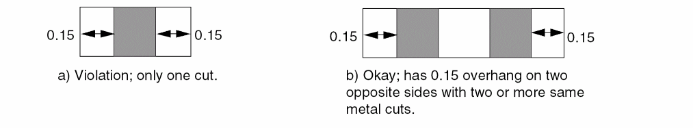 -
The following enclosure rule indicates that a
VAcut via must at least have either0.10μm,0.12μm or0.0μm, or0.20μm enclosures. For redundant cuts having same metal shapes on both metal layers, one of theVAcuts should at least have either0.10μm,0.12μm or0.0μm, or0.20μm enclosures, and the rest of theVAcuts within0.15μm distance from it, should have at least0.0μm,0.05μm enclosures.PROPERTY LEF58_ENCLOSURE“ENCLOSURE CUTCLASS VA 0.10 0.12 ;ENCLOSURE CUTCLASS VA 0 0 0.20 ;ENCLOSURE CUTCLASS VA 0.0 0.05 REDUNDANTCUT 0.15 ;” ; -
Figure 2-32 illustrates
ENCLOSURErule withREDUNDANTCUT:ENCLOSURE 0.03 0.03 WIDTH 0.3 ;PROPERTY LEF58_ENCLOSURE“ENCLOSURE 0.0 0.02 EXTRACUT ;ENCLOSURE 0.0 0.01 REDUNDANTCUT 0.1 ; ” ;
Figure 2-32 Illustrations of the Enclosure Rule With REDUNDANTCUT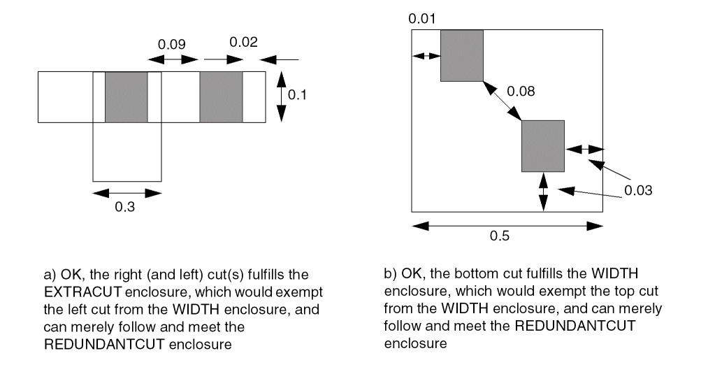 -
The following enclosure rule indicates that the overhang of a via cut must be 0.15 μm on an EOL edge with length less than 0.30 μm and it's opposite side, while the overhang must be 0.05 on the other two sides. If no EOL edge is involved, a via cut should have 0.10 μm overhang on all four sides of the routing layers:
ENCLOSURE 0.10 0.10 ;PROPERTY LEF58_ENCLOSURE“ENCLOSURE EOL 0.30 0.15 0.05 ; ” ;
Figure 2-33 Illustration of the Enclosure Rule With Enclosure EOL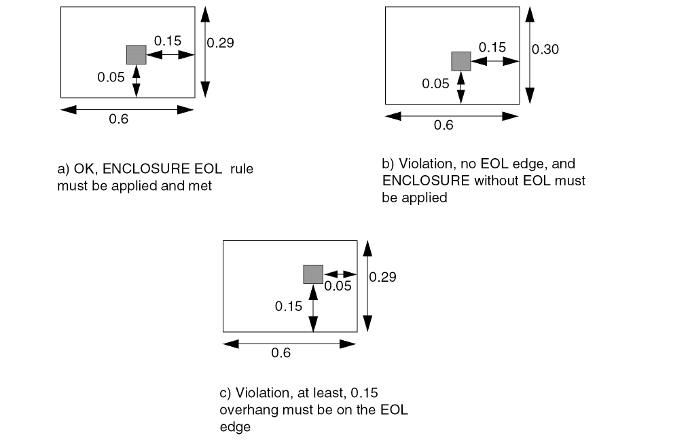Figure 2-34 Definition of SIDESPACING and ENDSPACING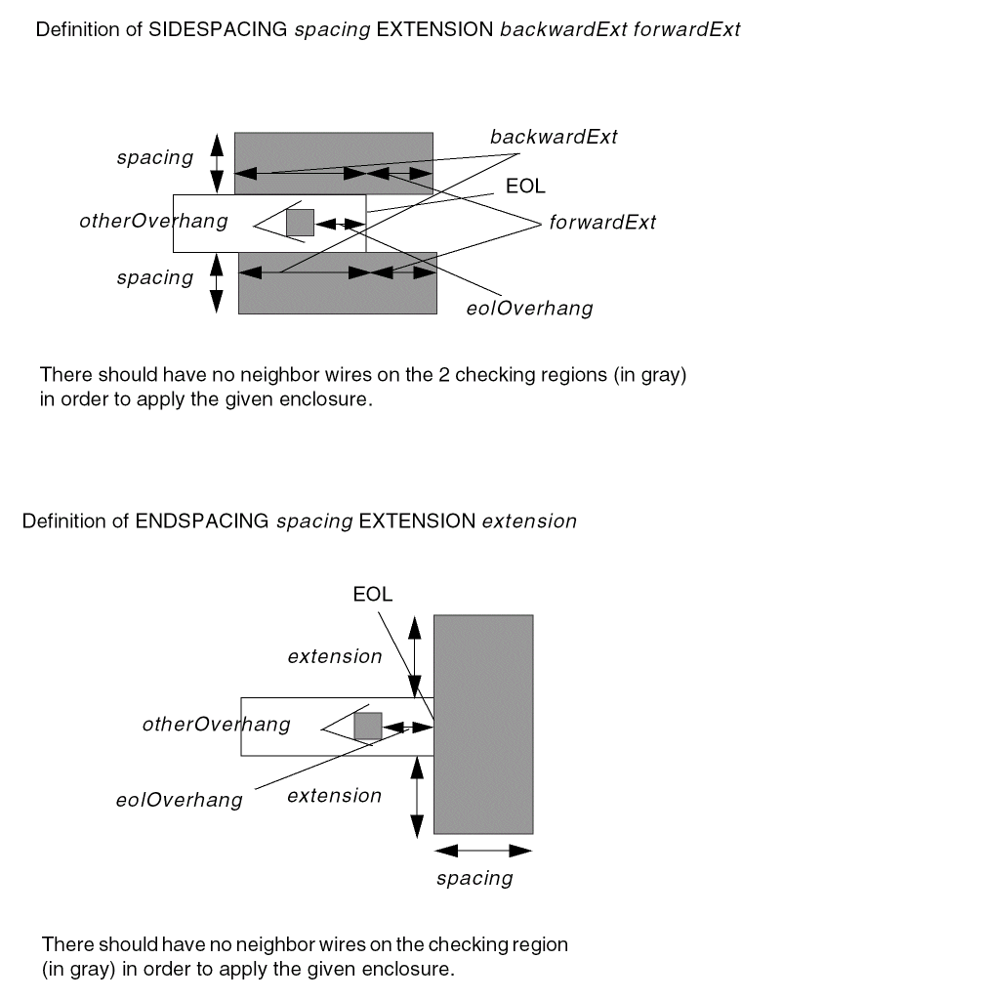 -
The following enclosure rule indicates that 0.15 μm and 0.05 μm can be the enclosure values of a cut on a EOL edge and the other sides if there is no neighbor wires within 0.04 μm with extension of 0.03 on the side edges or within 0.08 μm with extension of 0.06 on the EOL edge:
ENCLOSURE 0.1 0.1 ;PROPERTY LEF58_ENCLOSURE“ENCLOSURE EOL 0.2 0.15 0.05 SIDESPACING 0.04 EXTENSION 0.03 0.03 ;ENCLOSURE EOL 0.2 0.15 0.05 ENDSPACING 0.08 EXTENSION 0.06 ; ” ;
Figure 2-35 Illustration of the Enclosure Rule With SIDESPACING and ENDSPACING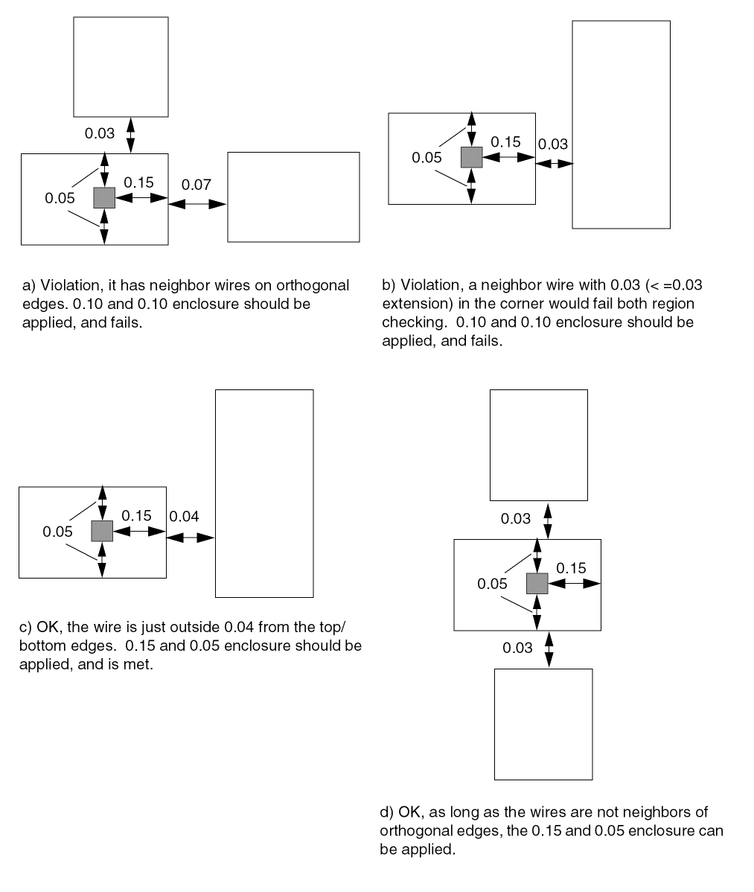 -
The following enclosure rule indicates that the overhang of a via cut must be 0.15 μm on an EOL edge with length less than 0.30 μm and the opposite side while the overhang must be 0.05 μm on the other two sides. If no EOL edge is involved, a via cut should have 0.10 μm overhang on all four sides of the routing layers:
PROPERTY LEF58_ENCLOSURE“ENCLOSURE EOL 0.30 EOLONLY 0.15 0.05 ; ” ;
Figure 2-36 Illustration of the Enclosure Rule With EOLONLY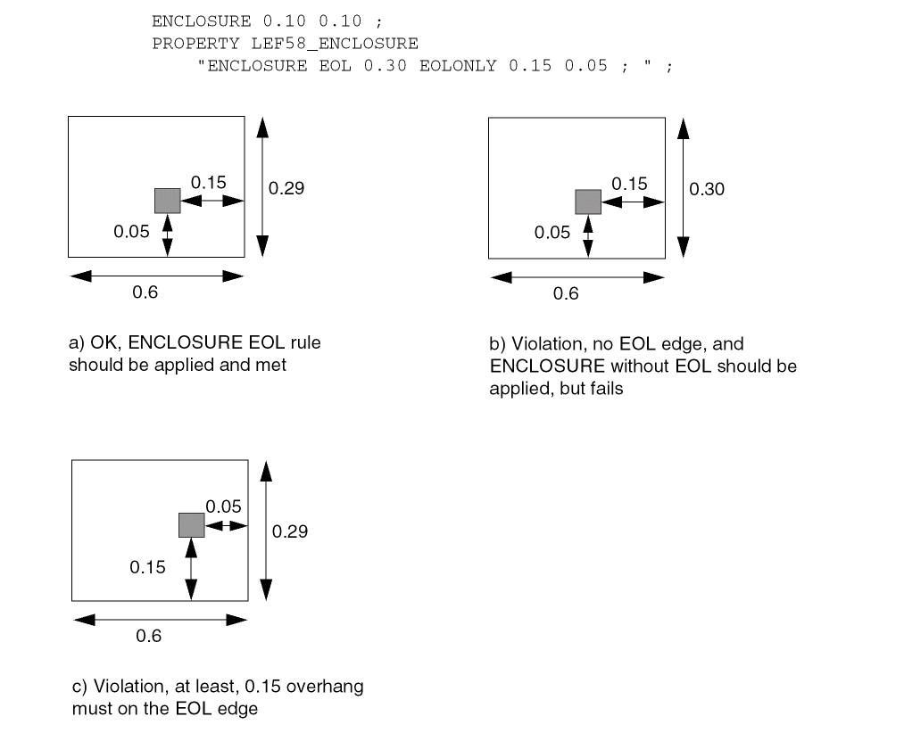 -
Figure 2-37 illustrates the following enclosure rules:
ENCLOSURE 0.05 0.00 ;ENCLOSURE 0.06 0.00 WIDTH 0.1 ;PROPERTY LEF58_ENCLOSURE“ENCLOSURE 0.09 0.09 PARALLEL -0.11 WITHIN 0.08 ;” ;
Figure 2-37 Illustration of the Enclosure Rule With PARALLEL and WITHIN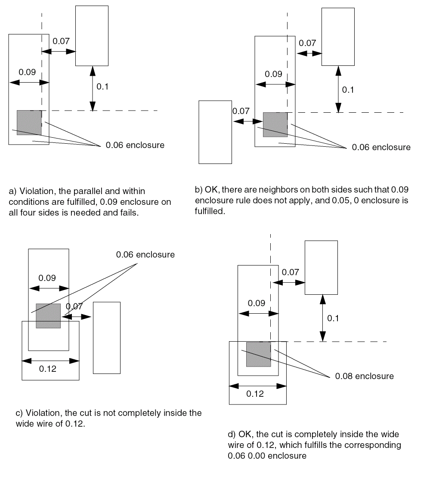 -
Figure 2-38 illustrates the following enclosure rules:
PROPERTY LEF58_ENCLOSURE“ENCLOSURE CUTCLASS VSINGLECUT ABOVE 0.020 0.000 ;ENCLOSURE CUTCLASS VSINGLECUT ABOVE 0.015 0.015PARALLEL -0.08 -0.1 WITHIN 0.04 0.06 ; ” ;
Figure 2-38 Illustration of the Enclosure Rule With PARALLEL and WITHIN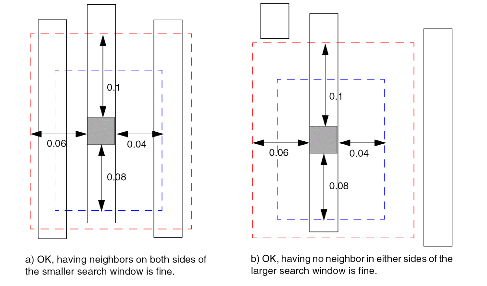
-
Figure 2-39 illustrates the following enclosure rules:
PROPERTY LEF58_ENCLOSURE“ENCLOSURE CUTCLASS VSINGLECUT ABOVE 0.020 0.000 ;ENCLOSURE CUTCLASS VSINGLECUT ABOVE 0.015 0.015PARALLEL -0.08 -0.1 WITHIN 0.04 0.06BELOWENCLOSURE 0.05 ; ” ;
Figure 2-39 Illustration of the Enclosure Rule With PARALLEL and WITHIN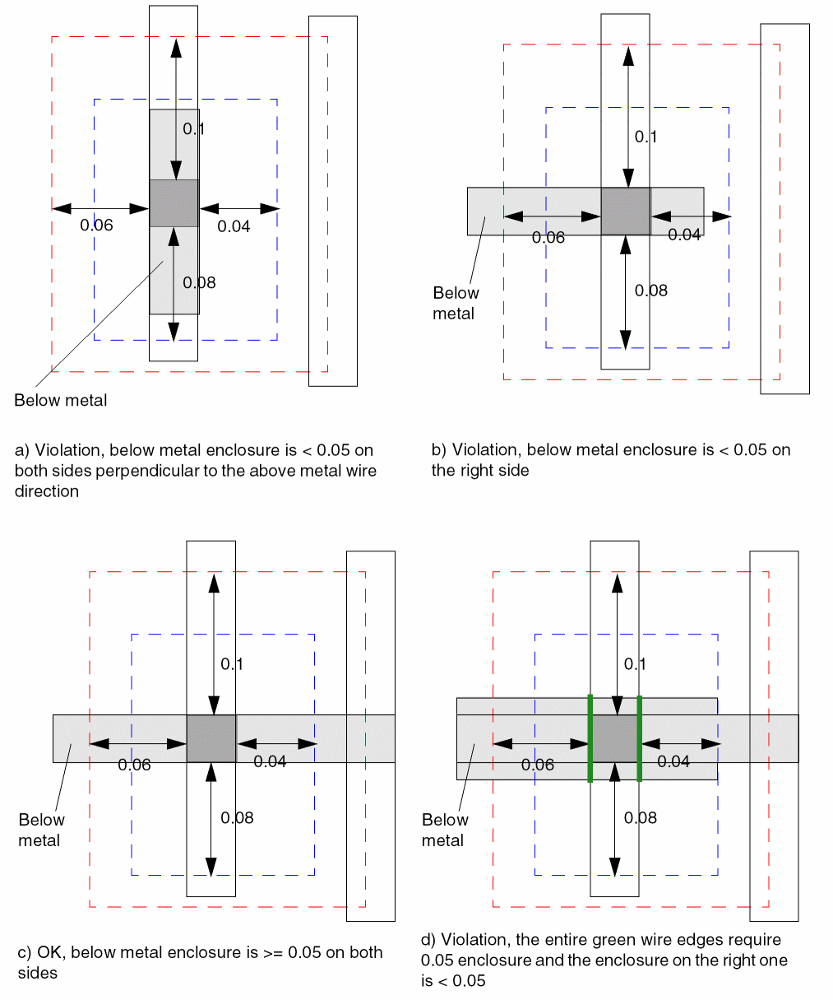Figure 2-40 Illustration of the Enclosure Rule With CONCAVECORNERS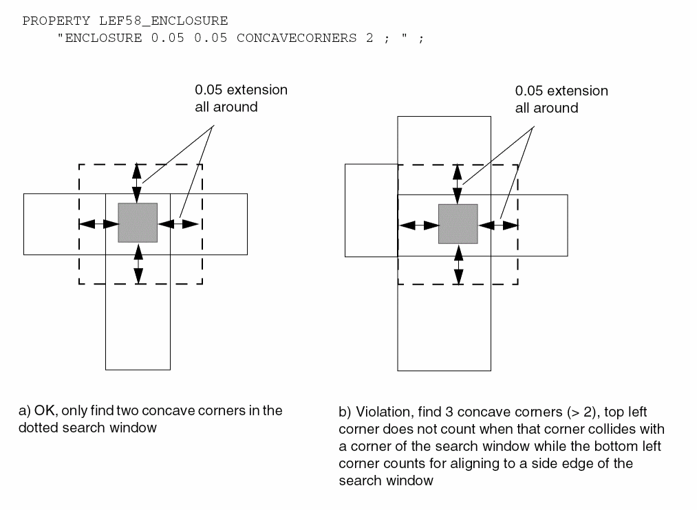 -
The following enclosure rule illustrates
MINCORNER:ENCLOSURE 0.00 0.04 ;PROPERTY LEF58_ENCLOSURE “ENCLOSURE MINCORNER 0.05 0.1 ; ” ;
Figure 2-41 Illustration of the Enclosure Rule With MINCORNER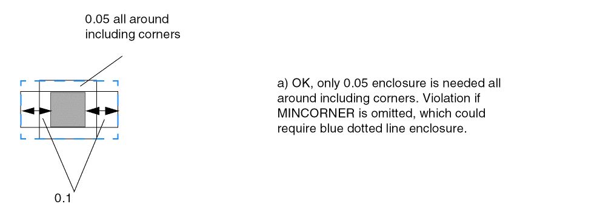 -
The following diagram illustrates use of
ALLSIDES:
Figure 2-42 Illustration of the Enclosure Rule With ALLSIDES in BELOWENCLOSURE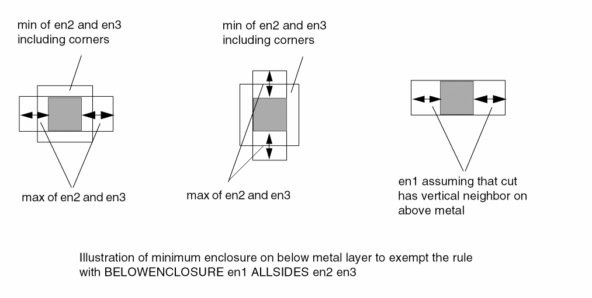 -
The following diagram illustrates the enclosure rule with
HOLLOWgiven below:ENCLOSURE 0.00 0.04 ;PROPERTY LEF58_ENCLOSURE “ENCLOSURE BELOW 0 0.03 HOLLOW HORIZONTAL 0.02 ; ” ;
Figure 2-43 Illustration of the Enclosure Rule With HOLLOW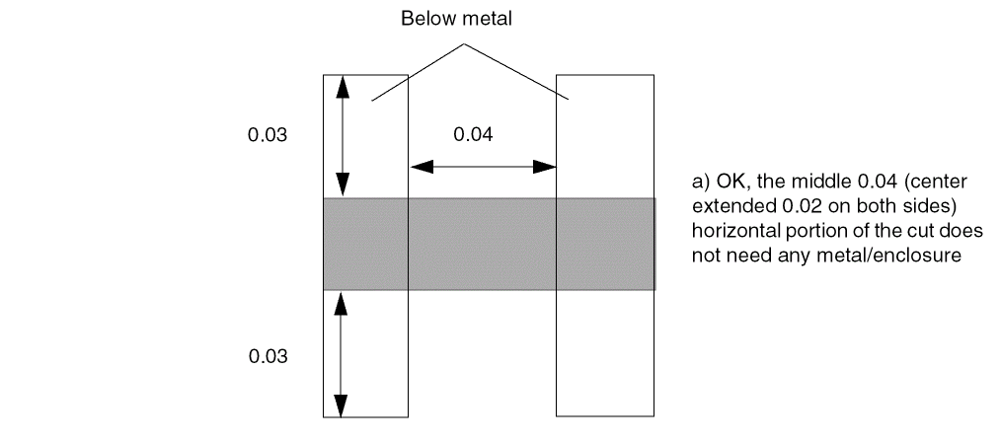 -
The following diagram illustrates an enclosure rule with
OTHERWITHINWIDTH:
Figure 2-44 Illustration of the Enclosure Rule with OTHERWITHINWIDTH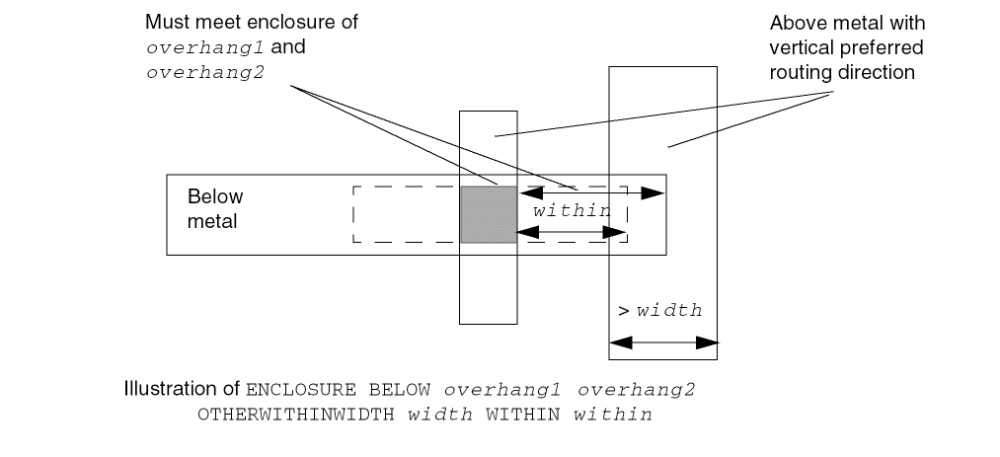 -
The following diagram illustrates an enclosure rule with
OTHERSIDE:
Figure 2-45 Illustration of Enclosure Rule with OTHERSIDE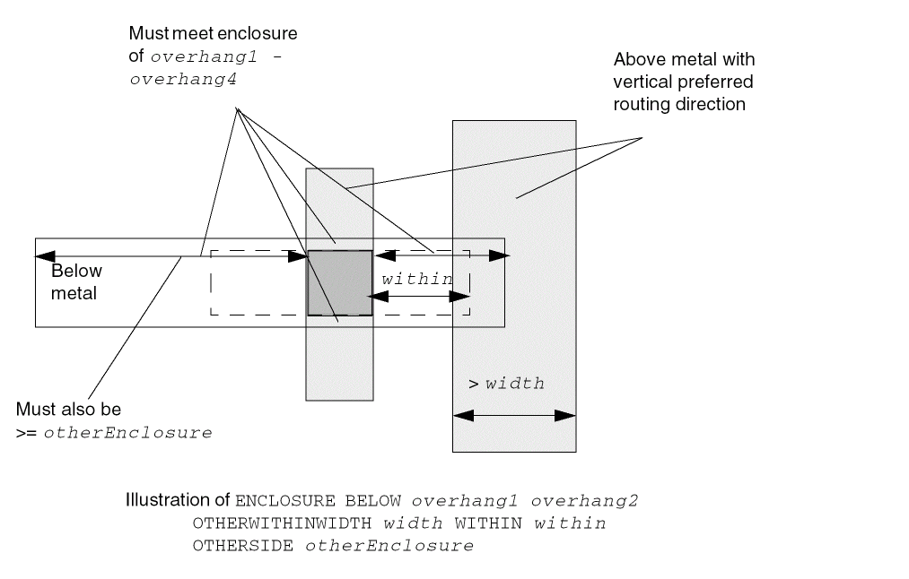
Enclosure Edge Rule
You can create a specific cut-edge enclosure rule that does not fit the normal enclosure rule semantics by using the following property definition:
PROPERTY LEF58_ENCLOSUREEDGE "ENCLOSUREEDGE [CUTCLASSclassName] [ABOVE | BELOW]overhang{OPPOSITE {[EXCEPTEOLeolWidth] [NOCONCAVECORNERwithin] [CUTTOBELOWSPACINGspacing[ABOVEMETALextension]] | WRONGDIRECTION } |[INCLUDECORNER] {WIDTH [BOTHWIRE]minWidth[maxWidth] | SPANLENGTHminSpanLength[maxSpanLength]} PARALLELparLength{WITHINparWithin| WITHINminWithinmaxWithin} [EXCEPTEXTRACUT [cutWithin]] [EXCEPTTWOEDGES [exceptWithin]] |CONVEXCORNERSconvexLengthadjacentLengthPARALLELparWithinLENGTHlength} ;]..." ;
All other keywords are the same as the existing LEF cut layer ENCLOSUREEDGE syntax.
|
If you specify |
|
|
Specifies that the cut to below metal different-net spacing of a cut edge fulfilling the overhang requirement is measured from the projected above metal edge with extension along the cut edge direction. See Figure 2-47. |
|
|
Specifies that the rule only applies if the width of the neighbor wire is greater than or equal to minWidth. |
|
|
|
|
|
Specifies the overhang on an edge with length less than or equal to convexLength between two convex corners to be overhang, if the following conditions are met:
The edge has adjacent edge with length less than or equal to adjacentLength and is also between two convex corners. The cut has neighbor wires with parallel run length greater than 0 and within (less than) parWithin on both of that edge and another adjacent edge with length greater than or equal to length. |
|
|
Defines the enclosure edge rule for a specific cut class (className). If
Specify individual rules with the |
|
|
Defines the spacing of a cut edge fulfilling the overhang requirement to a different-net wire on the below metal layer. Type: Float, specified in microns |
|
|
|
|
|
Indicates that any edge from this cut layer that is enclosed by metal that is greater than or equal to minWidth wide, and the enclosing metal edge is parallel to another metal edge greater than parLength in length and less than parWithin distance away, requires overhang enclosure. |
|
|
Indicates that if there is another via cut in the same metal intersection in both the above and below layers, this rule is not checked. If you specify cutWithin, the other via cut should be less than and equal to cutWithin distance away in order to ignore this rule. |
|
|
Specifies that if the enclosing metal edges have parallel metal edges greater than parLength that are less than exceptWithin, if specified, or parWithin away on opposite sides that covers the same PRL between the cut, then the rule does not apply. |
|
|
Defines the enclosure requirement applied to the corners of the cut in Euclidean measurement. This corner check is essential when the cut is slightly outside the projection of the neighbor wire. |
|
|
Specifies that there should be no concave corner on the above metal layer that is a within distance away after the extending overhang on the orthogonal edges of the edges that fulfill the overhang requirement. |
|
|
Specifies that if overhang of a via cut is less than or equal to overhang on the above metal layer (
The |
|
|
Specifies that the enclosure edge rule is triggered by the span length of the wire containing the cut via in the direction perpendicular to the parallel run length is greater than or equal to minSpanLength, instead of the width of the wire. An optional maxSpanLength has a similar definition as maxWidth in |
|
|
Specifies an optional maxWidth, such that if the width of the wire containing the cut via is greater than or equal to minWidth and less than maxWidth, then all the corresponding enclosure edge rules that meet the parallel and within conditions will be applied to the cut.
If any one of the |
|
|
Specifies that the rule only applies if parallel neighbor metal edge is greater than or equal to minWithin and less than maxWithin distance away. |
|
|
Specifies that overhang in the non-preferred direction on the above metal layer (you must specify the |
|
Enclosure Edge Rule Examples
-
Figure 2-46 illustrates enclosure edge rule with
NOCONCAVECORNERandCUTTOBELOWSPACING:PROPERTY LEF58_ENCLOSUREEDGE
"ENCLOSUREEDGE ABOVE 0.02 OPPOSITE
NOCONCAVECORNER 0.05
CUTTOBELOWSPACING 0.07 ; " ;
Figure 2-46 Illustration of Enclosure Edge Rules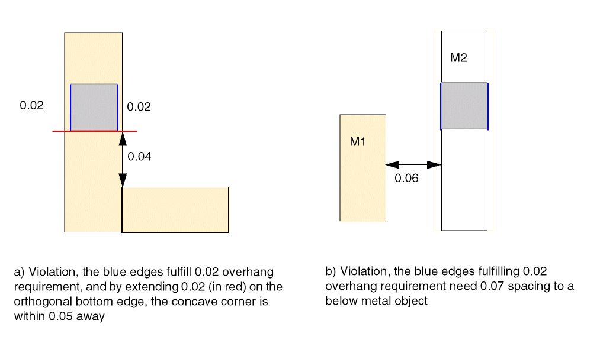 -
The following figure illustrates enclosure edge rule with
ABOVEMETAL:PROPERTY LEF58_ENCLOSUREEDGE
"ENCLOSUREEDGE ABOVE 0.02 OPPOSITE
CUTTOBELOWSPACING 0.07
ABOVEMETAL 0.03 ; " ;
Figure 2-47 Illustration of Enclosure Edge Rules -
Figure 2-48 illustrates the following enclosure edge rule:
ENCLOSURE 0.0 0.05 ; #normal enclosure rule
PROPERTY LEF58_ENCLOSUREEDGE
"ENCLOSUREEDGE 0.02 WIDTH 0.2 PARALLEL 0.25 WITHIN 0.11 ;" ;
Figure 2-48 Illustration of Enclosure Edge Rules -
Figure 2-49 illustrates the following enclosure edge rule:
PROPERTY LEF58_ENCLOSUREEDGE
"ENCLOSUREEDGE 0.05 WIDTH 0.20
PARALLEL 0.50 WITHIN 0.08 0.10
EXCEPTTWOEDGES 0.12 ; " ;
Figure 2-49 Illustration of the Enclosure Edge Rule with EXCEPTTWOEDGES -
Figure 2-50 illustrates the following enclosure edge rule:
PROPERTY LEF58_ENCLOSUREEDGE
"ENCLOSUREEDGE 0.05 WIDTH 0.20
PARALLEL 0.50 WITHIN 0.10 EXCEPTTWOEDGES ;" ;
Figure 2-50 Illustration of Enclosure Edge Rules -
Figure 2-51 illustrates the following enclosure edge rule:
PROPERTY LEF58_ENCLOSUREEDGE
"ENCLOSUREEDGE 0.05 INCLUDECORNER
WIDTH BOTHWIRE 0.20
PARALLEL 0.5 WITHIN 0.10 ; " ;
Figure 2-51 Illustration of the Enclosure Edge Rule with BOTHWIRE and INCLUDECORNERFigure 2-52 Illustration of the Enclosure Edge Rule with OPPOSITE and EXCEPTEOLFigure 2-53 Illustration of the Enclosure Edge Rule with SPANLENGTHFigure 2-54 Illustration of the Enclosure Edge Rule with CONVEXCORNERSFigure 2-55 Illustration of the Enclosure Edge Rule with WRONGDIRECTION
Enclosure Table Rule
You can create an enclosure table rule to specify the enclosure requirement based on the wire width in a table format by using the following property definition:
PROPERTY LEF58_ENCLOSURETABLE "ENCLOSURETABLE [CUTCLASSclassName] [MASKmaskNum] [OTHERMASKotherMaskNum] [USEMAXWIDTH | WITHINFIRSTWIDTH] [DEFAULT {[ABOVE | BELOW]overhang1overhang2overhang3overhang4}...] {WIDTHwidth{[ABOVE | BELOW]overhang1overhang2overhang3overhang4[MINSUM] [MAXLENGTHlength] [LAYERtrimLayerOVERLAP {1|2} [TRIMLENGTHOUTERMETALtrimLength] | OTHERWITHINWIDTHwidth[LAYERlayerName] WITHINwithin[OTHERSIDEotherEnclosure]] | LINEENDGAPONLY] [EXACTZERO] [INCLUDEABUTTED]}... | OTHERWIDTHotherWidth[PARALLEL parLength WITHIN parWithin] {{ABOVE| BELOW}overhang1overhang2overhang3overhang4[MINSUM]}...}... ; " ;
All the other keywords are the same as the existing LEF cut layer ENCLOSURETABLE syntax.
|
Defines enclosure rules for a specific cut class className. If |
|
|
|
|
|
Specifies overhang1 and overhang2 to be overhangs of a cut on two opposite sides and overhang3 and overhang4 on the other two opposite sides in a wire of any width. For a rectangular cut, the first two overhang values, overhang1 and overhang2, would be applied to the end or short cut edges while the last two overhang values, overhang3 and overhang4, would be applied to the side or long cut edges.
If you specify |
|
|
Specifies that if any of the given overhang values – overhang1, overhang2, overhang3, or overhang4 – is equal to
means that enclosures must be exactly equal to 0 on two opposite sides and greater than or equal to 0.030 on the other two opposite sides or greater than equal to 0.015 on all four sides to be legal. |
|
|
Specifies that if a cut is abutted to a wide wire with width greater than width, the overhang values corresponding to the wide wire should still be applied on the cut. |
|
|
Specifies a special enclosure requirement on rectangular pins depending on which pin end overlaps with or touches shapes in trimLayer, which must be a layer with |
|
|
Specifies that the rule applies only if a wire containing a cut on which the enclosure rule is applied fulfills the |
|
|
Specifies the mask on which the metal of this enclosure table rule will be applied. With |
|
|
Specifies the overhang requirements only applies if the span length of the wire containing the cut is less than or equal to the length. |
|
|
Indicates that it is legal for sum of overhang values on two opposite sides greater than or equal to the sum of the specified overhangs, and the smaller overhang value is greater than or equal to the smaller specified overhangs. This keyword should only be defined for asymmetrical overhang values. |
|
|
Specifies the mask on which the metal on the other layer in |
|
|
Defines the enclosure on the opposite side of a cut edge, which faces the wire fulfilling the |
|
|
|
|
|
Specifies that the overhang requirements on the above/below metal layer corresponding to the specified |
|
|
Specifies that the enclosure rule applies only if there is a neighboring wire within within of the cut in the non-preferred routing layer direction having width greater than width on the other layer having the |
|
|
Specifies that the enclosure with a shape on the layer trimLayer overlapping with or touching a wire end applies only if the trimLayer shape has a length greater than or equal to trimLength, and only the outermost wires overlapping or touching the trimLayer shape are subjected to this rule. |
|
|
Specifies that the maximum wire width with which a cut overlaps is used to look up the proper width rows for the overhang requirements. It is similar to the width interpretation in |
|
|
Specifies that the enclosure rule applies only if there is a metal neighbor at least on one side of the cut within (less than) parWithin having common parallel run length greater than or equal to parLength on the layer on which the enclosure is applied. If parLength is a negative value, the two edges will be checked in |
|
|
|
|
|
Specifies the overhang requirements for a cut in a wire having a certain width. The width values must be the same or in increasing order (from top to bottom) in the table. If any of the overhang values on a routing layer are asymmetrical, that is, overhang1 is not equal to overhang2 or overhang3 is not equal to overhang4, then the minimum wire width that the cut touches or overlaps with is determined. The last row with wire width greater than width and any one of the corresponding specified overhangs or overhangs defined in In addition, the minimum overhang value on all the four sides, including corners, is applied. The other overhang values per cut edges, without corner consideration, are applied. If all of the overhang values are symmetrical, the maximum wire width that the cut overlaps with and the traditional rectangle enclosure by using one overhang value on the two opposite sides and another overhang value on the other two opposite sides must be used.
The definition of overhangs
For a rectangular cut, the first two overhang values, overhang1 and overhang2, would be applied to the end or short cut edges while the last two overhang values, overhang3 and overhang4, would be applied to the side or long cut edges. |
|
|
Specifies that the minimum wire width that a cut overlaps with should be used to look up the enclosure requirement except for the case in which one of the overlap wire width is applicable to the width on the first row. In that case, if a cut overlaps with the wire widths applicable to multiple rows, the minimum wire width other than the widths for the first row would be used. In other words, the enclosure on the first row would be used only if a cut overlaps solely with the wire widths applicable to the first row width. |
|
Enclosure Table Rule Examples
-
The following enclosure table rule indicates that:
- For a cut in a wire of any width, 0.01 µm on two opposite sides and 0.02 µm on the other two opposite sides can be an overhang choice.
- For a via cut in a wire with width greater than 0.1 µm and less than or equal to 0.2 µm, 0.015 µm overhang on four sides can be applied.
- For a via cut in a wire with width greater than 0.2 µm and less than or equal to 0.3 µm, 0.015 µm and 0.016 µm overhangs on two opposite sides, and 0.017 µm and 0.018 µm overhangs on the other two opposite sides, or 0.025 µm and 0.03 µm or 0.026 µm and 0.029 µm or 0.027 µm and 0.28 µm on two opposite sides, 0.00 µm on the other two opposite sides can be applied.
- For a via cut in a wire with width greater than 0.3 µm, 0.019 µm overhang on four sides can be applied.
PROPERTY LEF58_ENCLOSURETABLE"ENCLOSURETABLEDEFAULT 0.01 0.01 0.02 0.02WIDTH 0.1 0.015 0.015 0.015 0.015WIDTH 0.2 0.015 0.016 0.017 0.0180.025 0.03 0.00 0.00 MINSUMWIDTH 0.3 0.019 0.019 0.019 0.019 ; " ; -
The following diagram illustrates the enclosure table rule given below:
PROPERTY LEF58_ENCLOSURETABLE"ENCLOSURETABLEWIDTH 0.3 0.05 0.05 0.08 0.1; " ;
Figure 2-56 Illustration of Enclosure Table Rules -
The following rule indicates that for a via cut in a wire with width > 0.1 µm, 0.015 overhang on four sides can be applied, for a via cut in a wire with width on the above metal layer > 0.2 µm, 0.019 overhang on the below metal layer on four sides can be applied.
PROPERTY LEF58_ENCLOSURETABLE"ENCLOSURETABLEWIDTH 0.1 0.015 0.015 0.015 0.015OTHERWIDTH 0.2 BELOW 0.019 0.019 0.019 0.019 ; " ;
Figure 2-57 Illustration of Enclosure Table Rules with OTHERWIDTH -
The following diagram illustrates an enclosure table rule with
OTHERWIDTH:
Figure 2-58 Illustration of Enclosure Table Rules with OTHERWIDTH
-
The following diagram illustrates an enclosure table rule with
WITHINFIRSTWIDTH:PROPERTY LEF58_ENCLOSURETABLE"ENCLOSURETABLE WITHINFIRSTWIDTHWIDTH 0.000 0.020 0.015 0.000 0.000WIDTH 0.024 0.020 0.015 0.001 0.001; " ;
Figure 2-59 Illustration of Enclosure Table Rule with WITHINFIRSTWIDTH -
The following diagram illustrates the enclosure table rule given below:
PROPERTY LEF58_ENCLOSURETABLE"ENCLOSURETABLEWIDTH 0.0 BELOW 0.0 0.0 0.015 0.015BELOW 0.0 0.0 0.012 0.012 MAXLENGTH 0.05 ; " ;
Figure 2-60 Illustration of Enclosure Table Rules -
The following diagram illustrates the enclosure table rule with
LAYERgiven below:PROPERTY LEF58_ENCLOSURETABLE"ENCLOSURETABLEWIDTH 0.0 BELOW 0.02 0.02 0.0 0.0WIDTH 0.0 BELOW 0.01 0.01 0.0 0.0LAYER TRIM1 OVERLAP 1 ; " ;
Figure 2-61 Illustration of Enclosure Table Rules with LAYER -
The following diagram illustrates the enclosure table rule with
LAYERgiven below:PROPERTY LEF58_ENCLOSURETABLE "ENCLOSURETABLE WIDTH 0.0 BELOW 0.02 0.02 0.0 0.0 WIDTH 0.0 BELOW 0.01 0.01 0.0 0.0 LAYER TRIM1 OVERLAP 2 ; " ;
Figure 2-62 Illustration of Enclosure Table Rules with LAYER -
The following diagram depicts an enclosure table rule with
TRIMLENGTHOUTERMETAL:PROPERTY LEF58_ENCLOSURETABLE "ENCLOSURETABLE WIDTH 0.0 BELOW 0.01 0.01 0.0 0.0 WIDTH 0.0 BELOW 0.02 0.02 0.0 0.0 LAYER TRIM1 OVERLAP 1 TRIMLENGTHOUTERMETAL 0.08 ; " ;
Figure 2-63 Illustration of Enclosure Table Rules with TRIMLENGTHOUTERMETAL -
The following diagram illustrates an enclosure table rule with
OTHERMASK:PROPERTY LEF58_ENCLOSURETABLE "ENCLOSURETABLE OTHERMASK 1 WIDTH 0.1 BELOW 0.015 0.015 0.015 0.015 OTHERWIDTH 0.2 BELOW 0.019 0.019 0.019 0.019 ; " ;
Figure 2-64 Illustration of Enclosure Table Rules with OTHERMASKFigure 2-65 Illustration of Enclosure Table Rule with BELOW OTHERWITHINWIDTHFigure 2-66 Illustration of Enclosure Table Rule with ABOVE OTHERWITHINWIDTH -
The following diagram illustrates an enclosure table rule with
LINEENDGAPONLY:PROPERTY LEF58_ENCLOSURETABLE “ ENCLOSURETABLE WIDTH 0.1 BELOW 0.02 0.02 0.10 0.10 LINEENDGAPONLY WIDTH 0.1 BELOW 0.05 0.05 0.10 0.10 ; " ;
On below metal layer,PROPERTY LEF58_LINEENDGAP “LINEENDGAP 0.03 WIDTH 0.12 MASK 1 ; “ ;
Figure 2-67 Illustration of Enclosure Table Rule with LINEENDGAPONLY
Enclosure Width Rule
You can create a specific cut-width enclosure rule that does not fit the normal enclosure rule semantics by using the following property definition:
PROPERTY LEF58_ENCLOSUREWIDTH
"ENCLOSUREWIDTH {VIAOVERLAPONLY | USEMINWIDTH}
; " ;
Enclosure Width Rule Examples
Figure 2-68 Illustration of Enclosure Width Rules
Enclosure Joint Rule
You can create enclosure joint rule to specify the overhang between a non-redundant cut to two consecutive joints in either above or both above and below routing layer.
You can create a enclosure joint rule by using the following property definition:
PROPERTY LEF58_ENCLOSURETOJOINT "ENCLOSURETOJOINT [CUTCLASSclassName] [ABOVE | BELOW]toOneJointOverhang[toBothJointOverhang] [EOLMINLENGTHminLength] JOINTWIDTHjointWidthJOINTLENGTHspanLength; " ;
Enclosure Joint Rule Examples
Figure 2-69 Illustration of Enclosure Joint Rule
EOL Enclosure Rule
You can create EOL enclosure rule to specify the enclosure requirement on a EOL edge with width less than the specified EOL width.
You can create a EOL enclosure rule by using the following property definition:
PROPERTY LEF58_EOLENCLOSURE "EOLENCLOSUREeolWidth[MINEOLWIDTHminEolWidth] [HORIZONTAL | VERTICAL] [EQUALRECTWIDTH] [CUTCLASSclassName] [ABOVE | BELOW] {{LONGEDGEONLY | SHORTEDGEONLY}overhang|overhang[exactOverhang| PARALLELEDGEparSpaceEXTENSIONbackwardExtforwardExt[MINLENGTHminLength] | MINLENGTHminLength| ALLSIDES ] } ; " ;
All other keywords are the same as the existing LEF cut layer EOLENCLOSURE syntax.
EOL Enclosure Rule Examples
Figure 2-70 Illustration of EOL Enclosure Rule
Figure 2-71 Illustration of EOL Enclosure Rule with EQUALRECTWIDTH
Figure 2-72 Illustration of EOL Enclosure Rule with PARALLELEDGE and EXTENSION
Figure 2-73 Illustration of EOL Enclosure Rule with MINEOLWIDTH
EOL Spacing Rule
You can create EOL spacing rule to specify the cut spacing on certain edges of a cut on a EOL edge above routing layer with width less than the specified EOL width.
You can create a EOL spacing rule by using the following property definition:
PROPERTY LEF58_EOLSPACING "EOLSPACINGcutSpacing1cutSpacing2[CUTCLASSclassName1[{TOclassName2cutSpacing1cutSpacing2}...]] ENDWIDTHeolWidthPRLprlENCLOSUREsmallerOverhangequalOverhangEXTENSIONsideExtbackwardExtSPANLENGTHspanLength; " ;
EOL Spacing Rule Examples
Figure 2-74 Illustration of EOLSPACING Rule
Forbidden Spacing Rule
You can create a forbidden spacing rule to specify forbidden spacing between two cuts.
You can create a forbidden spacing rule by using the following property definition:
PROPERTY LEF58_FORBIDDENSPACING "FORBIDDENSPACING CUTCLASSclassNameminSpacingmaxSpacing[SAMEMASK] [SHORTEDGEONLY | LONGEDGEONLY | HORIZONTAL | VERTICAL] [PRL {prlTOprlClassName}...] ; " ;
|
Specifies that spacing between two cuts on a given layer belonging to the same className cut class cannot be in the range minSpacing <= spacing <= maxSpacing. |
|
|
Specifies that forbidden spacing applies on only the given direction on the cut edge. |
|
|
Specifies that the forbidden spacing rule only applies to the side/long edge of cuts with a common parallel run length greater than 0. This means that the className must be a rectangular cut class. |
|
|
Specifies that the forbidden spacing rule only applies to same-mask cuts. |
|
|
Specifies that the forbidden spacing rule only applies to the end/short edge of className cuts with a common parallel run length greater than 0. This means that className must be a rectangular cut class. |
|
|
Specifies that forbidden spacing is between a className cut to prlClassName cut with common parallel run length greater than prl. If prl is negative, it is interpreted in the |
|
Forbidden Spacing Rule Examples
-
The following forbidden spacing table rule illustrates forbidden spacing between two VB cuts:
PROPERTY LEF58_FORBIDDENSPACING
"FORBIDDENSPACING CUTCLASS VB 0.07 0.09
SHORTEDGEONLY ; " ;
Figure 2-75 Illustration of Forbidden Spacing RuleFigure 2-76 Illustration of Forbidden Spacing Rule
Keep-out Zone Rule
The keep-out zone rule can be used to demarcate a cut spacing zone in which cuts of other classes cannot overlap.
You can create a keep-out zone rule by using the following property definition:
PROPERTY LEF58_KEEPOUTZONE "KEEPOUTZONE CUTCLASSclassName1[TOclassName2] [SAMEMASK] [EXCEPTEXACTALIGNED [SIDE | END] spacing] {EXTENSIONsideExtension forwardExtension| ENDEXTENSIONendSideExtension endForwardExtensionSIDEEXTENSIONsideSideExtension sideForwardExtension| HORIZONTALEXTENSIONhorzSideExtensionhorzForwardExtensionVERTICALEXTENSIONvertSideExtensionvertForwardExtension} SPIRALEXTENSIONextension[CORNERONLY] ;" ;
Keep-out Zone Rule Examples
KEEPOUTZONE CUTCLASS VB TO VA
ENDEXTENSIONendSideExtension endForwardExtensionSIDEEXTENSIONsideSideExtension sideForwardExtensionSPIRIALEXTENSIONextension
Figure 2-77 Illustration of the Keep-out Zone Rule
KEEPOUTZONE CUTCLASS VB TO VA
ENDEXTENSIONendSideExtension endForwardExtensionSIDEEXTENSIONsideSideExtension sideForwardExtensionSPIRIALEXTENSIONextensionCORNERONLY
Figure 2-78 Illustration of the Keep-out Zone Rule with CORNERONLY
-
The following example illustrates the keep-out zone rule with
HORIZONTALEXTENSIONandVERTICALEXTENSION:
KEEPOUTZONE CUTCLASS VA TO VAHORIZONTALEXTENSIONhorzSideExtension horzForwardExtensionVERTICALEXTENSIONvertSideExtension vertForwardExtensionSPIRIALEXTENSIONextension
Figure 2-79 Illustration of the Keep-out Zone Rule with HORIZONTALEXTENSION and VERTICALEXTENSION
Manufacturing Grid Rule
You can create a manufacturing grid rule to specify the manufacturing grid on a given layer to override the library manufacturing grid value.
You can create a manufacturing grid rule by using the following property definition:
PROPERTY LEF58_MANUFACTURINGGRID
"MANUFACTURINGGRID value
; " ;
|
Specifies the manufacturing grid on the given layer that overrides the library manufacturing grid value. |
|
Maximum Spacing Rule
You can create a maximum spacing rule to specify the maximum spacing between any two cuts.
You can create a maximum spacing rule by using the following property definition:
PROPERTY LEF58_MAXSPACING "MAXSPACINGspacing[CUTCLASSclassName] ;" ;
Minimum Enclosure Rule
You can create a minimum enclosure rule to specify the minimum enclosure requirements for cuts on the given cut class. These requirements are typically applied on cell objects.
You can create a maximum spacing rule by using the following property definition:
PROPERTY LEF58_MINENCLOSURE "MINENCLOSURE CUTCLASSclassName[ABOVE | BELOW]overhang1 overhang2; " ;
No Cut Class Rule
You can create a no cut class rule to specify that a given cut class cannot be used on a layer.
You can create a no cut class rule by using the following property definition:
PROPERTY LEF58_NOCUTCLASS
"NOCUTCLASS className
; " ;
No Metal Spacing Rule
You can create a no metal spacing rule by using the following property definition:
PROPERTY LEF58_NOMETALSPACING "NOMETALSPACINGspacingBOTHSPACINGbothSpacing[PRLprl] [SAMEMASK] [CUTCLASSclassName] NEIGHBORMETALmetalPrl metalWithin noMetalPrl noMetalWithin[ABOVE | BELOW] [EXCEPTLINEENDSPACINGlineEndSpacing] ;" ;
Figure 2-80 Illustration of No Metal Spacing Rule with NEIGHBORMETAL
Figure 2-81 Illustration of No Metal Spacing Rule with BOTHSPACING
Spacing with Same Metal Rule
You can use spacing with same metal rules to:
- Require extra space between cuts on different nets that overlap orthogonally, in order to avoid stress migration between the cuts. This rule does not apply if the cuts have the same metal above or below.
- Require extra spacing between different cut layers unless they are connected by a single metal shape.
You can create a spacing with same metal rule by using the following property definition:
PROPERTY LEF58_SPACING "SPACINGcutSpacing[SAMEMASK |MAXXY |[CENTERTOCENTER] [SAMENET | SAMEMETAL | SAMEVIA] [ LAYERsecondLayerName[STACK | ORTHOGONALSPACINGorthogonalSpacing] | CUTCLASSclassName[SHORTEDGEONLY [PRLprl] | CONCAVECORNER [WIDTHwidthENCLOSUREenclosureEDGELENGTHedgeLength| PARALLELparLengthWITHINparWithinENCLOSUREenclosure| EDGELENGTHedgeLengthENCLOSUREedgeEnclosureadjEnclosure] | EXTENSIONextension| NONEOLCONVEXCORNEReolWidth[MINLENGTHminLength] | ABOVEWIDTHwidth[ENCLOSUREenclosure] | MASKOVERLAP | WRONGDIRECTION]]] | ADJACENTCUTS {2 | 3 | 4} [EXACTALIGNEDexactAlignedCut] [TWOCUTStwoCuts[TWOCUTSSPACINGtwoCutsSpacing] [SAMECUT] | EACHCUTSnumCuts[EXCEPTEVENNUMCUT]] WITHINcutWithin|cutWithin1cutWithin2} [EXCEPTSAMEPGNET] [EXCEPTALLWITHINexceptAllWithin] [ENCLOSURE [ABOVE|BELOW]enclosure[EXCEPTLINEENDGAP]] [CUTCLASSclassName[TO ALL]] [NOPRL | SIDEPARALLELOVERLAP] [SAMEMASK] | PARALLELOVERLAP [EXCEPTSAMENET | EXCEPTSAMEMETAL |EXCEPTSAMEMETALOVERLAP | EXCEPTSAMEVIA] | PARALLELWITHINwithin[EXCEPTSAMENET] [CUTCLASSclassName[LONGEDGEONLY | ENCLOSUREenclosure{ABOVE | BELOW} PARALLELparLengthWITHINparWithin]] | SAMEMETALSHAREDEDGEparwithin[ABOVE][CUTCLASSclassName] [EXCEPTTWOEDGES][EXCEPTSAMEVIAnumCut] | AREAcutArea] ;..." ;
All other keywords are the same as the existing LEF cut layer SPACING syntax.
|
Specifies the cut to metal spacing applies only on the above metal layer wire with width greater than or equal to the width. This means that the second layer must be a metal layer. In addition, the spacing applies only to different-net objects.
When you define the |
|
|
Specifies that the adjacent cut rule only applies to same mask cuts. The presence of different mask cuts is irrelevant for this adjacent cut rule checking. |
|
|
Specifies that the adjacent cut rule only counts neighbor cut greater than or equal to cutWithin1 and less than cutWithin2 when two within values are specified. See Figure 2-99. |
|
|
|
|
|
The
The
The
Note: Do not use the |
|
|
Defines the adjacent cut spacing rule for a specific cut class (className). If
You can specify individual rules with the
The
When both |
|
|
Specifies that the parallel within cut spacing only applies to cuts belonging to the same className. If className is a rectangular cut class, then you can specify the |
|
|
|
|
|
Defines the inter-layer cut spacing of className to a metal in secondLayerName, which must be a routing layer. If className is a rectangular cut class, the
The |
|
|
Specifies that the adjacent cut rule applies only if the following conditions are met. A cut has greater than or equal to the specified number of cuts, defined with the |
|
|
Specifies that an edge of a concave corner of a wire containing a cut has length less than edgeLength, the other end of that edge is a convex corner and the cut has parallel run length greater than or equal to 0 to that edge, the spacing between that edge and the facing cut edge must be greater than or equal to cutSpacing. In addition, if that spacing/enclosure is less than edgeEnclosure (and greater than or equal to cutSpacing, which must be less than edgeEnclosure), the enclosure of the adjacent two opposite sides must be greater than or equal to adjEnclosure. Otherwise, it is a violation. |
|
|
Specifies that the adjacent cut rule applies only if the checking cut has enclosure less than enclosure on any one side in the preferred routing direction on the above and below metal layers. If |
|
|
|
|
|
Specifies that the cut spacing only applies if the enclosure on either above or below metal layer (depending on whether |
|
|
Specifies the exception that if a cut has all neighbors within cutWithin or range of cutWithin1 and cutWithin2, which are also within exceptAllWithin, it is allowed. exceptAllWithin should be less than or equal to cutSpacing. See Figure 2-94. |
|
|
Specifies that the adjacent cut rule does not apply if a wire containing a cut on which the enclosure condition is applied fulfills the |
|
|
Indicates that the parallel overlap rule does not apply to same-net cuts. |
|
|
Indicates that the parallel overlap rule does not apply to cuts that share the same metal shapes above or below metal layers of the cuts. |
|
|
Indicates that the parallel overlap rule does not apply to cuts that share the same metal shapes above or below metal layers that cover the projected overlap area between the cuts. This is the default. |
|
|
Indicates that the parallel within rule does not apply to same-net cuts. |
|
|
Indicates that the parallel overlap rule does not apply to cuts that share the same metal shapes both above and below the metal layers that cover the overlap area between the cuts. |
|
|
Specifies that the extension should be extended on the cut edges that do not fulfill the overhang defined in |
|
|
Specifies the cut to metal, containing the cut, spacing on the overlap area of two different masks. This means that the second layer must be a metal layer. |
|
|
Indicates that the cutSpacing value is used as the largest x or y distance for spacing between objects. This keyword can be applied only when |
|
|
Specifies the spacing of a cut to a convex corner that does not touch a EOL edge with width less than eolWidth of a metal shape containing the cut in form of a triangle formed by the smaller edge length or cutSpacing. In other words, the triangle is a keep-out region that the cut could not overlap.
The MINLENGTH keyword indicates that the EOL edge must have length greater than or equal to the minLength along both sides. In other words, if the EOL length is less than minLength along any one side, then the edge is not a EOL edge. |
|
|
Specifies the different-net spacing between objects on the cut layer and objects on the secondLayerName, which must be a routing layer. The rule does not apply to same-net objects. The spacing check is done by using the following method:
The difference between cutSpacing and orthogonalSpacing is calculated, and half of that difference is shrunk on two sides of the cut and grown on the other two sides. Then, a Euclidean spacing of the average of cutSpacing and orthogonalSpacing is applied to the newly formed rectangle geometry. The shrink and grow operations are done on the alternated sides to form another checking region. A violation occurs if neighbor wires on the secondLayerName are found in both the regions. |
|
|
Indicates that the cuts that have a parallel edge overlap greater than 0 require cutSpacing distance between them. Only one
Note: You should not use |
|
|
Specifies that the cut to concave corner spacing only applies for a wire with default wire width containing the cut and all the conditions as described below hold true. The cut has zero enclosure on two opposite sides, and the enclosure is less than enclosure on one of the other two opposite sides on the specified secondLayerName. There are neighbor wires on both metal layers of the cut on opposite sides. The spacing to the below metal must be exactly equal to parWithin - |
|
|
Specifies that if the edge of a neighbor cut is within within distance beyond the edge of another cut, cutSpacing is required between them. If a cut layer has more than one cut class, the parallel within rule could be applied among all cut classes, including via cuts belonging to different cut classes
Note: You should not use |
|
|
Specifies that the adjacent cut rule only applies between two cuts, each having the same cut neighbors, besides potential neighbor of each other. See Figure 2-101. |
|
|
Indicates that the minimum spacing rule only applies between objects on the same mask. |
|
|
Indicates that the cutSpacing value only applies to cuts that are overlapped with the same metal shape. The
See Figure 2-83 for an example of the difference between |
|
|
|
|
|
Specifies the spacing greater than and equal to cutSpacing between two via cuts that have a common parallel run length greater than 0, have common above and /or below metal shapes covering the entire length of common projection between them and have neighbor wire(s) within parWithin distance from them on the same edge.
|
|
|
Indicates that the cutSpacing value only applies to cuts that share the same metal shapes above and below that cover the overlap area between the cuts. The |
|
|
Specifies the cut spacing between two cuts, each having a specified number of neighbor cuts, defined using twoCuts, that are within (or less than) a cutWithin distance away, that is the cutSpacing. The value of twoCuts must be smaller than the specified number of cuts defined with the |
|
|
Specifies that the adjacent cut rule applies only if all of the cuts fulfilling the |
|
|
Specifies that the cut to concave corner spacing applies if the width of an edge forming the concave corner is less than or equal to the width, the length of the adjacent edge is greater than or equal to the edgeLength, and forms a search window for cuts by extending cutSpacing on the concave corner along both sides of the edge with width less than or equal to the width. Any cut edge parallel to the metal edge with width less than or equal to the width inside that search window must have enclosure greater than or equal to enclosure. Otherwise, it will be a violation. |
|
|
Specifies the spacing for a cut to a non-preferred direction metal, when the cut is contained in a preferred direction same-metal wire. This indicates that the second layer must be a metal layer. |
|
Spacing Rule Examples
-
The following spacing rule indicates that the minimum spacing of objects on the same mask in the routing layer is 0.15 μm while the minimum spacing of objects on different masks is 0.10 μm:
SPACING 0.10 ;PROPERTY LEF58_SPACING"SPACING 0.15 SAMEMASK ; " ; -
The following spacing rule indicates that cuts should have x or y distance of maximum 0.12 μm between them:
PROPERTY LEF58_SPACING"SPACING 0.12 MAXXY ;" ;
Figure 2-82 Illustration of Spacing Rule with MAXXY -
The following figure illustrates the
SAMEMETALrules for the following examples.
If the via3 layer has the following spacing rules:
SPACING 1.5 ; #via3 to via3 spacing
SPACING 1.5 LAYER via2 ; #via3 to via2 spacing
Then both a) and b) are violations.
-
If the via3 layer has the following spacing rules, then
a)is a violation, butb)is allowed:SPACING 1.5 ;SPACING 1.5 LAYER via2 ;PROPERTY LEF58_SPACING“SPACING 0 SAMEMETAL LAYER via2 STACK ;” ;
Figure 2-83 Illustration of SAMEMETAL Rules -
The following spacing rule specifies that a
VAvia can have at most one neighboringVAvia within0.30μm center-to-center distance away:PROPERTY LEF58_SPACING"SPACING 0.30 CENTERTOCENTER ADJACENTCUTS 2 WITHIN 0.30 CUTCLASS VA ;" ; -
The following spacing rule specifies that
0.1μm spacing is required between two cuts if one cut is within0.02μm beyond the edge of the other cut:PROPERTY LEF58_SPACING"SPACING 0.09 ;" ;"SPACING 0.1 PARALLELWITHIN 0.02 ;" ; -
The following spacing rule indicates that same-net is exempted for the cut to metal rule:
PROPERTY LEF58_SPACING"SPACING 0.1 LAYER M2CUTCLASS VB SHORTEDGEONLY ;" ;
Figure 2-84 Illustration of CUTCLASS with SHORTEDGEONLYFigure 2-85 Illustration of CUTCLASS with CONCAVECORNERFigure 2-86 Illustration of CUTCLASS with Extension Figure 2-87 Illustration of CUTCLASS with NONEOLCONVEXCORNER
Figure 2-87 Illustration of CUTCLASS with NONEOLCONVEXCORNER
Figure 2-88 Illustration of CUTCLASS with ABOVEWIDTH and ENCLOSURE
Figure 2-89 Illustration of CUTCLASS with WRONGDIRECTION
Figure 2-90 Illustration of CUTCLASS with MASKOVERLAP
Figure 2-91 Illustration of CONCAVECORNER with WIDTH
Figure 2-92 Illustration of CONCAVECORNER with WITHIN in PARALLEL
Figure 2-93 Illustration of CONCAVECORNER with WITHIN in PARALLEL
Figure 2-94 Illustration of ADJACENTCUTS with EXCEPTALLWITHIN
Figure 2-95 Illustration of PARALLELWITHIN Rules
Figure 2-96 Illustration of PARALLELWITHIN with LONGEDGEONLY
-
The following spacing rule indicates that cuts that share the same metal shapes on both above and below metal layers should be 0.12 μm apart:
PROPERTY LEF58_SPACING“SPACING 0.12 SAMEVIA ;” ; -
The following spacing rule indicates that the center-to-center spacing between cuts must be at least 0.2 if a cut has at least three exactly aligned neighbor cuts, horizontally and/or vertically, less than or equal to 0.2 μm away, or a cut has at least two neighbor cuts less than 0.2 μm away and one of those neighbor cuts is not exactly aligned:
PROPERTY LEF58_SPACING“SPACING 0.2 CENTERTOCENTER ADJACENTCUTS 2 EXACTALIGNED 3 WITHIN 0.2 ;” ;
Figure 2-97 Illustration of the ADJACENTCUTS Rule with EXACTALIGNEDFigure 2-98 Illustration of the ADJACENTCUTS Rule with TWOCUTSFigure 2-99 Illustration of the ADJACENTCUTS Rule with TWOCUTSSPACING Figure 2-100 Illustration of the ADJACENTCUTS Rule with WITHIN
Figure 2-100 Illustration of the ADJACENTCUTS Rule with WITHIN Figure 2-101 Illustration of the ADJACENTCUTS Rule with ENCLOSUREFigure 2-102 Illustration of ADJACENTCUTS Rule with SAMECUTFigure 2-103 Illustration of the ADJACENTCUTS Rule with EACHCUTSFigure 2-104 Illustration of the ADJACENTCUTS Rule with EXCEPTEVENNUMCUTFigure 2-105 Illustration of the ADJACENTCUTS Rule with EXCEPTLINEENDGAP
Figure 2-101 Illustration of the ADJACENTCUTS Rule with ENCLOSUREFigure 2-102 Illustration of ADJACENTCUTS Rule with SAMECUTFigure 2-103 Illustration of the ADJACENTCUTS Rule with EACHCUTSFigure 2-104 Illustration of the ADJACENTCUTS Rule with EXCEPTEVENNUMCUTFigure 2-105 Illustration of the ADJACENTCUTS Rule with EXCEPTLINEENDGAP -
The following spacing rule indicates that a VB via can at most have one neighbor VB via within 0.45 μm distance if they have a side to side parallel edge overlap greater than 0:
PROPERTY LEF58_SPACING“SPACING 0.45 ADJACENTCUTS 2 WITHIN 0.45 CUTCLASS VB SIDEPARALLELOVERLAP ;” ;
Figure 2-106 Illustration of ADJACENTCUTS Rule with SIDEPARALLELOVERLAP -
The following example shows spacing rule with
NOPRL:
Figure 2-107 Illustration of ADJACENTCUTS Rule with NOPRL -
The following spacing rule indicates that cuts that do not share the same metal shapes both above and below metal layers and have a parallel edge overlap greater than 0 must have 0.15 μm distance between them:
PROPERTY LEF58_SPACING
"SPACING 0.12 SAMEVIA ;" ;
"SPACING 0.13 ;" ;
"SPACING 0.15 PARALLELOVERLAP EXCEPTSAMEVIA ;" ;
Figure 2-108 Illustration of PARALLELOVERLAP Rule with EXCEPTSAMEVIA -
The following spacing rule indicates that two via cuts having common parallel run length greater than 0, having common above and /or below metal shapes covering the entire length of common projection between them and having one neighbor wire within 0.12 μm distance of them on the same edge must be, at least 0.1 μm spacing apart:
PROPERTY LEF58_SPACING“SPACING 0.1 SAMEMETALSHAREDEDGE 0.12 EXCEPTTWOEDGES ;” ;
Figure 2-109 Illustration of SAMEMETALSHAREDEDGE ruleFigure 2-110 Illustration of SAMEMETALSHAREDEDGE RuleFigure 2-111 Definition of Spacing Rule with ORTHOGONALSPACINGFigure 2-112 Illustration of Spacing Rule with ORTHOGONALSPACING Figure 2-113 Illustration of Spacing Rule with EXCEPTSAMEMETALFigure 2-114 Illustration of ENCLOSURE with ABOVEFigure 2-115 Illustration of EDGELENGTH with ENCLOSURE
Figure 2-113 Illustration of Spacing Rule with EXCEPTSAMEMETALFigure 2-114 Illustration of ENCLOSURE with ABOVEFigure 2-115 Illustration of EDGELENGTH with ENCLOSURE
Figure 2-116 Illustration of the ADJACENTCUTS Rule with EXCEPTLINEENDGAP
-
The following spacing rule indicates that a VB via can at most have one neighbor VB via within 0.45 μm distance if they have a side to side parallel edge overlap greater than 0:
PROPERTY LEF58_SPACING“SPACING 0.45 ADJACENTCUTS 2 WITHIN 0.45 CUTCLASS VB SIDEPARALLELOVERLAP ;” ;
Figure 2-117 Illustration of ADJACENTCUTS Rule with SIDEPARALLELOVERLAP -
The following example shows spacing rule with
NOPRL:
Figure 2-118 Illustration of ADJACENTCUTS Rule with NOPRL -
The following spacing rule indicates that cuts that do not share the same metal shapes both above and below metal layers and have a parallel edge overlap greater than 0 must have 0.15 μm distance between them:
PROPERTY LEF58_SPACING
"SPACING 0.12 SAMEVIA ;" ;
"SPACING 0.13 ;" ;
"SPACING 0.15 PARALLELOVERLAP EXCEPTSAMEVIA ;" ;
Figure 2-119 Illustration of PARALLELOVERLAP Rule with EXCEPTSAMEVIA -
The following spacing rule indicates that two via cuts having common parallel run length greater than 0, having common above and /or below metal shapes covering the entire length of common projection between them and having one neighbor wire within 0.12 μm distance of them on the same edge must be, at least 0.1 μm spacing apart:
PROPERTY LEF58_SPACING“SPACING 0.1 SAMEMETALSHAREDEDGE 0.12 EXCEPTTWOEDGES ;” ;
Figure 2-120 Illustration of SAMEMETALSHAREDEDGE ruleFigure 2-121 Illustration of SAMEMETALSHAREDEDGE RuleFigure 2-122 Definition of Spacing Rule with ORTHOGONALSPACINGFigure 2-123 Illustration of Spacing Rule with ORTHOGONALSPACINGFigure 2-124 Illustration of Spacing Rule with EXCEPTSAMEMETALFigure 2-125 Illustration of ENCLOSURE with ABOVEFigure 2-126 Illustration of EDGELENGTH with ENCLOSURE
Spacing Table Rule
The spacing table rule can be used to define cut spacing between different cut classes.
You can create a spacing table rule by using the following property definition:
[PROPERTY LEF58_SPACINGTABLE
“SPACINGTABLE
[ORTHOGONAL
{WITHIN cutWithin SPACING orthoSpacing} ... ;
|[DEFAULT defaultCutSpacing]
[SAMEMASK]
[SAMENET | SAMEMETAL | SAMEVIA]
[LAYER secondLayerName
[NOSTACK]
[NONZEROENCLOSURE
| PRLFORALIGNEDCUT
{{className1 | ALL} TO {className2 | ALL} }...
| EXCEPTENCLOSURE exceptEnclosure]]
[CENTERTOCENTER
{{className1 | ALL}| TO {className2 | ALL}}...]
[CENTERANDEDGE [NOPRL]
{{className1 | ALL}| TO {className2 | ALL}}...]
[PRL prl [ HORIZONTAL| VERTICAL] [MAXXY]
[{{className1 | ALL} TO {className2 | ALL} ccPrl
[ HORIZONTAL| VERTICAL] }...] ]
[PRLTWOSIDES
{prl1 prl2 prl3 prl4 [WITHIN within]
className1 TO className2 spacing}...]
[ENDEXTENSION extension [{TO className classExtension}...]
[SIDEEXTENSION {TO className classExtension}...] ]
[EXACTALIGNEDSPACING [HORIZONTAL | VERTICAL]
{className exactAlignedSpacing}...]
[NONOPPOSITEENCLOSURESPACING
{className nonOppositeEnclosureSpacing}...]
[OPPOSITEENCLOSURERESIZESPACING
{className resize1 resize2 oppositeEnclosureResizeSpacing}...
[EDGEALIGNED [HORIZONTAL|VERTICAL]]]
CUTCLASS { {className1 | ALL} [SIDE | END]}...
{{className2 | ALL} [SIDE | END] {- | cutSpacing1}
{- | cutSpacing2}...}...;
]
; " ;]
All other keywords are the same as the existing LEF cut layer SPACINGTABLE syntax.
|
|
|
|
Computes the cutSpacing1 and cutSpacing2 distance from cut-center to cut-center, instead of cut-edge to cut-edge (the default behavior), for the given list of class name pairs. The className1 is one of the cut classes in the first row of the table and className2 is one of the cut classes in the first column of the table. The |
|
|
|
|
|
Indicates that center-to-center measurement applies to the larger of the cutSpacing1 and cutSpacing2, which must be different values, while edge-to-edge measurement applies to the smaller of the two cut spacings.
The |
|
|
|
|
|
Specifies a specific ccPrl value between the given cut classes. If |
|
|
Specifies a list of cut classes, which may not necessarily be a complete list of all cut classes in the cut layer. In this case, the cut spacing requirements are not needed for any missing cut classes. The
If an intercut layer is specified (using the
If the cut class has a rectangular cut shape, the |
|
|
|
|
|
Indicates that cutSpacing1 and cutSpacing2 is applied between className2 and className1 in the first row of the table.
There are two sets of cut spacing values for each table entry. The first cutSpacing1 value applies if there is no parallel edge overlap between the via cuts. The second cutSpacing2 value applies if there is a parallel edge overlap greater than 0. If
If interlayer cut spacing is specified with the
The |
|
|
Indicates the default cut spacing between cut classes.
If a table entry contains -, the defaultCutSpacing value applies. In this case the
DEFAULT keyword must be specified.
An undefined cut class will have the spacing of |
|
|
Specifies that the opposite enclosure resize spacing is also applied if the edges of the expanded windows are aligned either horizontally or vertically or only in the specified direction ( |
|
|
Defines extension values applied to the end/short edge of all rectangular cuts, before cutSpacing1 and cutSpacing2, are measured to the cuts with extensions. If the |
|
|
|
|
|
Specifies the spacing between two className cuts that are perfectly aligned, either horizontally or vertically, must be greater than or equal to exactAlignedSpacing. If |
|
|
Specifies that the inter-layer cut spacing between any cuts in the current layer to any cuts in layer secondLayerName applies only for the cuts in the current layer with enclosure on the above metal layer on all four sides greater than exceptEnclosure and parallel run length greater than |
|
|
Defines the inter-cut-layer spacing between a className1 via in the first row of the table on the layer that this spacing table is being defined to another className2 via in the first column on secondLayerName cut layer. This cut spacing is ignored for same-net. This second layer must be a previously defined cut layer immediately below the layer that this spacing table is being defined, that is, “one layer look ahead” is not supported.
If an inter-cut-layer spacing table is defined for same-net cuts using the |
|
|
|
|
|
Specifies that the center-to-center spacing between a cut of className that does not fulfill the overhang defined in |
|
|
Specifies that the inter-layer cut spacing between cuts in the current layer to cuts in the specified secondLayerName only applies for cut edges with enclosure on the above metal layer of the cuts in the current layer greater than 0 and has parallel run length greater than 0 with the cuts in secondLayerName layer. In other words, the cutSpacing1 should be 0, while cutSpacing2 is the required cut spacing between cuts for the specified two cut classes. |
|
|
Specifies that stacked vias between any cuts in the current layer to any cuts in layer secondLayerName are not allowed. This construct must be specified with either |
|
|
|
|
|
Specifies that the center-to-center spacing between two cuts of className that fulfill the overhang defined in |
|
|
|
|
|
Specifies the second cutSpacing2 value only applies to cut edges of className2 on secondLayerName that fulfill the overhang defined in |
|
|
Defines the condition when to apply cutSpacing1 and cutSpacing2 between cuts. When cuts have a common parallel run length greater than prl, cutSpacing2 is used between the cuts. Otherwise, cutSpacing1 is used. If prl is negative, it indicates that a neighbor cut within abs(prl) distance beyond the edge of a cut will need to be cutSpacing2 distance away from it. This is a global definition that applies to cuts in all cut classes.
The |
|
|
|
|
|
Specifies that the center-to-center spacing between cuts of className1 and className2 that are greater than or equal to prl1 and less than or equal to prl2 on one side and greater than or equal to prl3 and less than or equal to prl4 on the other side to be spacing. If |
|
|
Specifies that the cut spacing applies between cuts on the same mask. When a cut layer has more than one mask, you can specify up to two cut class |
|
|
Indicates that cutSpacing1 and cutSpacing2 values only apply to same-net cuts. The |
|
|
Indicates that cutSpacing1 and cutSpacing2 values only apply to cuts that are overlapped with the same metal shape. The |
|
|
Indicates that cutSpacing1 and cutSpacing2 values only apply to cuts that are overlapped with the same metal shape on both the above and below metal. The |
|
|
Defines extension value, classExtension, applied to the side/long edge of all rectangular cuts before cutSpacing1 and cutSpacing2 are measured to the cuts in className with extensions. When side extension is applied between certain cut classes, the end extension is not applied. Hence, you cannot apply the same className after the |
|
You cannot mix with any other cut layer spacing statements, except for ADJACENTCUTS, PARALLELWITHIN, and SAMEMETALSHAREDEDGE.
Multiple spacing among different cut classes is possible. For cut layer shapes in PIN or OBS statement that belong to a macro of class CORE, the cut size of the via should match one of the sizes of the cut classes so that the tools can determine the proper spacing for the cut. If not, specific spacing should be defined for the cut in the macro definition using the SPACING keyword that is part of the layer geometry specification in MACRO. If the SPACING keyword is not specified, minimum spacing in the cut layer is used. If the cut size of the abstracted cuts does not match one of the cut class sizes, a single spacing value is applied to all four sides of the cut. This may cause DRC violations.
As with any OBS shapes, a cut layer OBS shape is always considered to belong to a net that is different from any pin, even if it is overlapping with a pin geometry on the adjacent metal layer. In this case, different-net cut-to-cut spacing is used to compute the cut-to-cut distance between the OBS and any cut that is connected to the corresponding pin.
BLOCKAGES keyword) will use minimum cut spacing around them, similar to OBS.Spacing Table Rule Examples
-
The following illustration shows the regions that the cut via should be overlapped with when
SIDEorENDkeywords are used.
Figure 2-127 Illustration of Spacing Table Rule With Side and End -
The following spacing table rules specify the spacing requirements between
VAvia and end edge ofVBvia, and end edge ofVBvia andVAvia:
The rules translate into the followingSPACINGTABLEproperty definition:PROPERTY LEF58_SPACINGTABLE
DEFAULT 0.15 CENTERTOCENTER VA TO VA VC TO VC
CUTCLASS VA VB SIDE VB END VC
VA 0.20 0.20 - - 0.30 - -
VB SIDE - - - - - 0.40 - -
VB END - 0.30 - 0.40 - 0.40 - 0.30
VC - - - - - 0.30 0.50 0.50
-
The following spacing table rule indicates that center-to-center spacing between two square cut
VAvias must be greater than or equal to0.20μm:PROPERTY LEF58_SPACINGTABLE CENTERTOCENTER VA TO VA
CUTCLASS VA
VA 0.20 0.20
Figure 2-128 Illustration of Spacing Table Rule With CenterToCenter -
The following spacing table rule illustrates opposite enclosure resize spacing:
PROPERTY LEF58_ENCLOSUREEDGE
"ENCLOSUREEDGE ABOVE 0.02 OPPOSITE ; " ;
PROPERTY LEF58_SPACINGTABLE
"SPACINGTABLE CENTERTOCENTER VA TO VA
OPPOSITEENCLOSURERESIZESPACING VA 0.05 0.03 0.07
CUTCLASS VA …
VA 0.1 0.1 … ; " ;
Figure 2-129 Illustration of Spacing Table Rule With Opposite Enclosure Resize Spacing -
The following spacing table rule illustrates an aligned edge condition in opposite enclosure resize spacing:
PROPERTY LEF58_ENCLOSUREEDGE
"ENCLOSUREEDGE ABOVE 0.02 OPPOSITE ; " ;
PROPERTY LEF58_SPACINGTABLE
"SPACINGTABLE CENTERTOCENTER VA TO VA
OPPOSITEENCLOSURERESIZESPACING VA 0.05 0.03 0.07
EDGEALIGNED HORIZONTAL
CUTCLASS VA ...
VA 0.1 0.1 ... ; " ;
Figure 2-130 Illustration of Spacing Table Rule with an Aligned Edge Condition in Opposite Enclosure Resize Spacing -
The following spacing table rule indicates that a default spacing of
0.15μm is required between viaVCand end edge of viaVBwhen parallel edge overlap is less than or equal to 0:PROPERTY LEF58_SPACINGTABLE DEFAULT 0.15
CUTCLASS VB SIDE VB END VC
VB SIDE - - - 0.40 - -
VB END - 0.40 - 0.40 - 0.30
VC - - - 0.30 0.50 0.50
Figure 2-131 Illustration of Spacing Table Rule With Default -
The following spacing table rule indicates the spacing requirements between two
VBvias when default spacing of0.15μm is specified:PROPERTY LEF58_SPACINGTABLE DEFAULT 0.15
CUTCLASS VB SIDE VB END
VB SIDE - 0.40 - -
VB END - - - -
Figure 2-132 Illustration of Spacing Table Rule With Default -
The following spacing table rules specify the intercut layer spacing of different metals between vias:
The rules translate into the following SPACINGTABLE property definition:
PROPERTY LEF58_SPACINGTABLE LAYER V1 CENTERTOCENTER VA TO VA
CUTCLASS VA VB SIDE
VA 0.10 0.10 0.20 0.20
VB SIDE 0.20 0.20 0.30 0.30
-
The following spacing table rule indicates that via
VAshould not overlap with the projection line from the side edge of viaVB:PROPERTY LEF58_SPACINGTABLE DEFAULT 0.0 LAYER V1
CUTCLASS VA VB SIDE
VA - - 0.20 0.22
VB SIDE 0.20 0.22 - -
Figure 2-133 Illustration of Spacing Table Rule With Layer

-
The following spacing table rule specifies that the intercut layer spacing between
VAvia on the current cut layer to any center-to-center vias onC1cut layer, when the cuts do not share a common same metal shape, must be0.15μm:PROPERTY LEF58_SPACINGTABLE LAYER C1 CENTERTOCENTER VA TO ALL
CUTCLASS VA
ALL 0.15 0.15
-
The following illustration defines
PRLwithMAXXY:
Figure 2-134 Definition of Spacing Table Rule With PRL
-
The following spacing table rule illustrates the use of
PRLTWOSIDES:PROPERTY LEF58_SPACINGTABLE "
SPACINGTABLE CENTERTOCENTER VA TO VA
PRLTWOSIDES -0.07 -0.05 -0.1 -0.08 VA TO VA 0.15
CUTCLASS VA ...
VA 0.2 0.2 ... ; " ;
Figure 2-135 Definition of Spacing Table Rule With PRL -
The following spacing table rule illustrates the use of
PRLTWOSIDESwithWITHIN:PROPERTY LEF58_SPACINGTABLE "
SPACINGTABLE CENTERTOCENTER VA TO VA
PRLTWOSIDES -0.07 -0.05 -0.1 -0.08 WITHIN 0.11
VA TO VA 0.09
CUTCLASS VA ...
VA 0.2 0.2 ... ; " ;
Figure 2-136 Definition of Spacing Table Rule With WITHIN in PRLTWOSIDES -
The following spacing table rule indicates that 0.20 μm is the cut to cut spacing between two VA vias measuring center-to-center when the cuts have parallel edge overlap greater than 0 while 0.10 μm is the cut to cut spacing between two VA vias measuring edge-to-edge when the cuts have no parallel edge overlap:
PROPERTY LEF58_SPACINGTABLE
"SPACINGTABLE
CENTERANDEDGE VA TO VA
CUTCLASS VA
VA 0.10 0.20 ; " ;
-
The following spacing table rule indicates that the cut to cut spacing between two VA vias is the maximum of 0.20 μm measuring center-to-center and 0.10 μm measuring edge-to-edge:
PROPERTY LEF58_SPACINGTABLE
"SPACINGTABLE
CENTERANDEDGE NOPRL VA TO VA
CUTCLASS VA
VA 0.10 0.20 ; " ;
-
The following spacing table rule indicates that two perfectly aligned
VAcuts must have spacing greater than or equal to 0.1 µm, two cuts with parallel edge overlap greater than 0 must have spacing greater than or equal to 0.12 µm, and two cuts without parallel edge overlap must have spacing greater than or equal to 0.11 µm:PROPERTY LEF58_SPACINGTABLE
"EXACTALIGNEDSPACING VA 0.1
CUTCLASS VA ...
VA 0.11 0.12 ...; " ;
-
The following spacing table rule indicates that 0.15 μm extension is applied to the end/short edge of rectangular VB cuts before 0.10 μm spacing is required to square VC cuts, -0.05 μm extension (pulled in by 0.05 μm) is applied to the end/short edge of rectangular VB cuts before 0.10 μm spacing is required to square VA cuts, and 0.03 μm extension is applied to the side/long edge of rectangular VB cuts before 0.10 μm spacing is required between two VB cuts.
PROPERTY LEF58_SPACINGTABLE
"SPACINGTABLE
DEFAULT 0.10
ENDEXTENSION -0.05 TO VC 0.15 SIDEEXTENSION TO VB 0.03
CUTCLASS VA VB END VB SIDE VC
VA - - - - - - - -
VB END - - - - - - - -
VB SIDE - - - - - - - -
VC - - - - - - - - ; " ;
-
The following example shows spacing table rule with
ENDEXTENSION:PROPERTY LEF58_SPACINGTABLE
"SPACINGTABLE
DEFAULT 0.10
ENDEXTENSION 0.05 TO VC 0.15
CUTCLASS VA VB END VB SIDE VC
VA - - - - - - - -
VB END - - - - - - - -
VA SIDE - - - - - - - -
VC - - - - - - - - ; " ;
Figure 2-137 Illustration of Spacing Table Rule with ENDEXTENSION -
The following spacing table rule illustrates use of
NONZEROENCLOSUREon layerV2:PROPERTY LEF58_SPACINGTABLE
"SPACINGTABLE
LAYER V1
NONZEROENCLOSURE
CUTCLASS V2....
V1 0.000 0.05...; " ;
Figure 2-138 Illustration of Spacing Table Rule with NONZEROENCLOSURE -
The following example shows parallel run length for aligned cuts:
On layer V2,PROPERTY LEF58_SPACINGTABLE
"SPACINGTABLE
LAYER V1
PRLFORALIGNEDCUT V2 TO V1
CUTCLASS V2 ...
V1 0.06 0.05 ... ; " ;
Figure 2-139 Example of Spacing Table Rule with PRLFORALIGNEDCUT -
The following example shows parallel run length for aligned cuts:
On layer V2,PROPERTY LEF58_ENCLOSUREEDGE “
ENCLOSUREEDGE ABOVE 0.02 OPPOSITE ; “ ;
PROPERTY LEF58_SPACINGTABLE
"SPACINGTABLE
LAYER V1
PRLFORALIGNEDCUT V2 TO V1
PRL -0.04
CUTCLASS V2 ...
V1 0.09 0.05 ... ; " ;
Figure 2-140 Example of Spacing Table Rule with PRLFORALIGNEDCUT
Spacing Table with Center Spacing Rule
You can create a center spacing rule to specify the intercut layer spacing among cuts in center-to-center style.
You can use the following property definition:
PROPERTY LEF58_SPACINGTABLE
"SPACINGTABLE CENTERSPACING
LAYER secondLayerName
CUTCLASS {{className1 | ALL} }...
{{className2 | ALL} {cutSpacing}...}...
; " ;
Center Spacing Rule Examples
-
The following example indicates that 0.1 µm is the center-to-center spacing between two
VAvia cuts, 0.20 µm is the center-to-center spacing between twoVBvia cuts, and 0.15 µm is the center-to-center spacing between aVAvia cut and aVBvia cut:PROPERTY LEF58_SPACINGTABLE
"SPACINGTABLE CENTERSPACING
LAYER V1
CUTCLASS VA VB
VA 0.10 0.15
VB 0.15 0.20 ; " ;
One of the via is on the current layer with the spacing table definition while the other via is on layer V1.
One Array Rule
You can create a one array rule to define a 1xN array via by using the following property definition:
PROPERTY LEF58_ONEDARRAY "ONEDARRAY CUTCLASSclassNameCUTSPACINGcutSpacingARRAYCUTSarrayCutsSPACINGspacingLAYERsecondLayerNameSPACINGinterLayerSpacingENCLOSUREoverhang1overhang2; " ;
Opposite Overlap Cut Spacing Rule
You can create an opposite overlap cut spacing rule to specify the inter-layer cut spacing between a cut on the given layer to two cuts on another layer.
You can use the following property definition:
PROPERTY LEF58_OPPOSITEOVERLAPCUTSPACING "OPPOSITEOVERLAPCUTSPACINGspacingPRLprlLAYERsecondLayerName; " ;
Opposite Overlap Cut Spacing Example
-
The following example is an illustration of an opposite overlap cut spacing rule defined on layer
VIA2as follows:PROPERTY LEF58_OPPOSITEOVERLAPCUTSPACING"OPPOSITEOVERLAPCUTSPACING 0.06 PRL 0.01LAYER VIA1 ;";
Figure 2-141 Illustration of Opposite Overlap Cut Spacing Rule
Orthogonal Spacing Rule
You can create an orthogonal spacing rule to define additional spacing constraints for two exactly aligned cuts.
You can use the following property definition:
PROPERTY LEF58_ORTHOGONALSPACING "ORTHOGONALSPACINGcutSpacing[CUTCLASSclassName] {ABOVE | BELOW} PARALLELparLengthWITHINparWithinWIDTHwidth[METALPRLmetalPrlMETALWITHINmetalWithin] [HORIZONTAL | VERTICAL] ; " ;
Orthogonal Spacing Rule Examples
-
The following example is an illustration of the orthogonal spacing rule:
ORTHOGONALSPACINGcutSpacingCUTCLASS VA ABOVE PARALLEL -parLengthWITHINparWithinWIDTHwidth
Figure 2-142 Illustration of Orthogonal Spacing Rule -
The following example shows illustrations of the orthogonal spacing rule:
ORTHOGONALSPACINGcutSpacingCUTCLASS VA ABOVE PARALLEL -parLengthWITHINparWithinWIDTHwidthMETALPRLmetalPrlMETALWITHINmetalWithin
Figure 2-143 Illustrations of the Orthogonal Spacing Rule with METALPRL and METALWITHIN
PRL Two Sides Spacing Rule
You can create a PRL two sides spacing rule to define additional spacing constraints for cut spacing.
You can use the following property definition:
PROPERTY LEF58_PRLTWOSIDESSPACING "PRLTWOSIDESSPACINGprlSpacingnonPrlSpacingCUTCLASSclassName1TOclassName2PRLprl1 prl2 prl3 prl4; " ;
The PRL two sides spacing rule specifies that the center-to-center spacing between a cut of className1 and another cut of className2 that are greater than or equal to prl1 and less than or equal to prl2 on one side, and greater than or equal to prl3 and less than or equal to prl4 on the other side to be prlSpacing. Otherwise, the center-to-center spacing of nonPrlSpacing should be applied on them. This spacing is checked in addition to the spacing defined in CUTCLASS SPACINGTABLE. This means that it is a violation if cut spacing fails in PRLTWOSIDESSPACING or in the spacing table.
Figure 2-144 Illustration of the PRL Two Sides Spacing Rule
Region Rule
You can create a region rule to define area-based rules on a cut layer.
You can use the following property definition:
PROPERTY LEF58_REGION “REGIONregionLayerNameBASEDLAYERcutLayerName; ” ;
Region Rule Example
The following example means that a cut overlapping region R1 should have spacing of 0.7 and a cut spacing check outside region R1 should have spacing of 0.5. Adjacent cut and any other rules on layer V1 (without REGION) would also be applied on region R1:
LAYER R1
TYPE MASTERSLICE ;
PROPERTY LEF58_TYPE “TYPE REGION ; ” ;
END R1
...
LAYER V1
TYPE CUT ;
...
SPACING 0.5 ;
SPACING 0.8 ADJACENTCUTS 2 WITHIN 0.8 ;
...
END V1
LAYER V1R1
TYPE CUT ;
PROPERTY LEF58_REGION “REGION R1 BASEDLAYER V1 ; ” ;
...
SPACING 0.7 ;
...
END V1R1
Figure 2-145 Illustration of the Region Rule
Same-Metal Aligned Cuts Rule
You can create a same-metal aligned cuts rule to define the number of center-aligned cuts that share the same metal on a cut layer.
You can use the following property definition:
PROPERTY LEF58_SAMEMETALALIGNEDCUTS "SAMEMETALALIGNEDCUTSnumCutsCUTCLASS {className| ALL} | {CUTCLASSLIST {classNameList}...}...} [ABOVE | BELOW] WIDTHwidthSPACINGspacing[PARALLELparLengthWITHINparWithin| METALWITHINmetalWithin[WITHCUT] | CUTWITHINcutWithin] [NOVIAOVERLAPMETALwithin] ; " ;
Same-Metal Aligned Cuts Rule Examples
-
The following example is an illustration of the same-metal aligned cuts rule:
PROPERTY LEF58_SAMEMETALALIGNEDCUTS “SAMEMETALALIGNEDCUTS 2 CUTCLASS ALLBELOW WIDTH 0.04 SPACING 0.1 ; “ ;
Figure 2-146 Illustration of the Same-Metal Aligned Cuts Rule -
The following example is an illustration of the same-metal aligned cuts rule with a metal neighbor:
PROPERTY LEF58_SAMEMETALALIGNEDCUTS "SAMEMETALALIGNEDCUTS 2 CUTCLASS ALLBELOW WIDTH 0.04 SPACING 0.1PARALLEL 0.05 WITHIN 0.03; " ;
Figure 2-147 Illustration of the Same-Metal Aligned Cuts Rule with PARALLEL and WITHIN -
The following example is an illustration of the same-metal aligned cuts rule with a metal neighbor and
METALWITHINspecified:PROPERTY LEF58_SAMEMETALALIGNEDCUTS "SAMEMETALALIGNEDCUTS 2 CUTCLASS VABELOW WIDTH 0.04 SPACING 0.1 METALWITHIN 0.03; " ;
Figure 2-148 Illustration of the Same-Metal Aligned Cuts Rule with METALWITHIN -
The following example is an illustration of the same-metal aligned cuts rule with
CUTWITHINspecified:
On V2,PROPERTY LEF58_SAMEMETALALIGNEDCUTS "SAMEMETALALIGNEDCUTS 2 CUTCLASS V2ABELOW WIDTH 0.04 SPACING 0.1 CUTWITHIN 0.03; " ;
Figure 2-149 Illustration of the Same-Metal Aligned Cuts Rule with CUTWITHIN -
The following example is an illustration of the same-metal aligned cuts rule with
NOVIAMETALOVERLAPspecified:PROPERTY LEF58_SAMEMETALALIGNEDCUTS "SAMEMETALALIGNEDCUTS 2 CUTCLASS V2ABELOW WIDTH 0.04 SPACING 0.1NOVIAMETALOVERLAP 0.06; " ;
Figure 2-150 Illustration of the Same-Metal Aligned Cuts Rule with NOVIAMETALOVERLAP
Via Cluster Rule
You can create a via cluster rule to define a list of critiques to form a via cluster for via cuts belonging to a cut class, and the spacing requirements on them.
You can use the following property definition:
PROPERTY LEF58_VIACLUSTER "VIACLUSTER CUTCLASSclassNameCUTSperpendicularNumCut[DIAGONALdiagonalNumCut] [NOPRLSPACINGdiagonalSpacingbendSpacingWITHINwithinEXTENSIONsideExtensionedgeExtension]] WITHINminWithinmaxWithin; " ;
Figure 2-151 Illustration of the Via Cluster Rule with WITHIN
Figure 2-152 Illustration of the Via Cluster Rule with NOPRLSPACING
Via Group Rule
You can create a via group rule by using the following property definition:
PROPERTY LEF58_VIAGROUP "VIAGROUPgroupNameCUTSnumCutCUTCLASS {className| ALL} [SAMEMASK] {PRLTWOSIDESprl1 prl2 prl3 prl4SPACINGminSpacing maxSpacing[ALLOWBEND [NOHORIZONTAL|NOVERTICAL]] | ALIGNEDSPACING {HORIZONTAL | VERTICAL}minSpacing maxSpacing} ; " ;]
Via Group Rule Examples
-
The following example is an illustration of the via group rule:
PROPERTY LEF58_VIAGROUP “VIAGROUPgroupNameCUTS 3 CUTCLASS VAPRLTWOSIDESprl1 prl2 prl3 prl4SPACING minSpacing maxSpacing“ ;
Figure 2-153 Illustration of the Via Group Rule -
The following diagram illustrates a via group rule with
ALIGNEDSPACING:
Figure 2-154 Illustration of the Via Group Rule with ALIGNEDSPACING -
The following example is an illustration of the via group rule with
ALLOWBEND:PROPERTY LEF58_VIAGROUP “VIAGROUPgroupNameCUTS 3 CUTCLASS VAPRLTWOSIDESprl1 prl2 prl3 prl4SPACING minSpacing maxSpacingALLOWBEND NOVERTICAL” ;
Figure 2-155 Illustration of the Via Group Rule with ALLOWBEND
Via Group Spacing Rule
You can create a via group spacing rule by using the following property definition:
PROPERTY LEF58_VIAGROUPSPACING "VIAGROUPSPACINGspacing[SAMEMASK] [{HORIZONTAL| VERTICAL} [PRLprl]]VIAGROUPgroupNameCUTSnumCut[LAYERcutLayerName] CUTCLASSclassName[TOVIAGROUP] [MERGEDCUTS] [PARALLELparLengthWITHINparWithinOTHERCUTCLASS otherClassName; " ;]]
Via Group Spacing Rule Examples
-
The following diagram illustrates the via group spacing rules defined below:
VIAGROUP VGA CUTS 3 CUTCLASS VAPRLTWOSIDESprl1 prl2 prl3 prl4SPACINGminSpacing maxSpacingVIAGROUPSPACINGspacing1VIAGROUP VGA CUTS 3 CUTCLASS VAVIAGROUPSPACINGspacing2VIAGROUP VGA CUTS 2 CUTCLASS VB
Figure 2-156 Illustration of the Via Group Spacing Rule -
The following diagram illustrates the via group spacing rule with
VERTICALdefined below:VIAGROUP VGA CUTS 3 CUTCLASS VAPRLTWOSIDESprl1 prl2 prl3 prl4SPACINGminSpacing maxSpacingVIAGROUPSPACINGspacing1VERTICALVIAGROUP VGA CUTS 3 CUTCLASS VA
Figure 2-157 Illustration of the Via Group Spacing Rule with VERTICAL -
This example illustrates the following via group spacing rule:
VIAGROUP VGA CUTS 3 CUTCLASS VAPRLTWOSIDESprl1 prl2 prl3 prl4SPACINGminSpacing maxSpacingVIAGROUPSPACINGspacingVIAGROUP VGA CUTS 2 CUTCLASS VAPARALLELparLengthWITHINparWithinOTHERCUTCLASS VB
Figure 2-158 Illustration of the Via Group Spacing Rule with OTHERCUTCLASS -
The following diagram illustrates the via group spacing rule with
TOVIAGROUPdefined below:VIAGROUP VGA CUTS 2 CUTCLASS VAALIGNEDSPACING VERTICALSPACINGminSpacing maxSpacingVIAGROUPSPACINGspacingHORIZONTAL PRLprlVIAGROUP VGA CUTS 2 CUTCLASS VA TOVIAGROUP
Figure 2-159 Illustration of the Via Group Spacing Rule with TOVIAGROUP -
The following diagram illustrates the via group spacing rule with
MERGEDCUTSdefined below:VIAGROUPSPACINGspacingVIAGROUP VGA CUTS 3 CUTCLASS VA MERGEDCUTS
Figure 2-160 Illustration of the Via Group Spacing Rule with MERGEDCUTS
Voltage Spacing Rule
Voltage spacing rules can be used to define spacing among vias objects on the same cut layer in different voltages.
You can create a voltage spacing rule by using the following property definition:
PROPERTY LEF58_VOLTAGESPACING
"VOLTAGESPACING {voltage spacing} ...
; " ;
Return to top